Historiographical Archive
A personal archive of references, links, images and fragments related primarily to historiography.
-
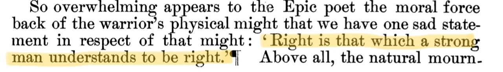
Bhishma Pitamah on what is right -
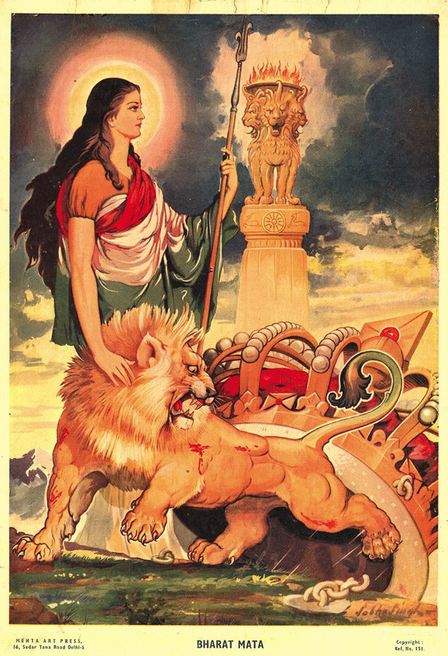
vintage Bharat Mata poster -
A History of the Hindu Political Theories by U Ghoshal or Hindu Polity by K P Jayaswal. (Regicide was seen as Un-Arya and hence Shunga coup against Brihadrath Maurya was not celebrated but rather condemned by Brahminical forces). Following is an excerpt from Bana’s Harshacharita.
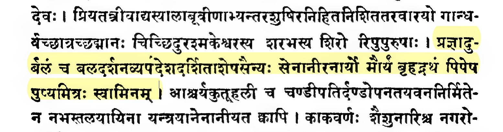
The highlighted passage (the assassination):
“And Puṣyamitra, having displayed the entirety of his forces to [his king] under the pretext and appearance of a military review — [thereby concealing] the true power of his intellect behind the show of [mere] armed strength — struck down his own lord, Bṛhadratha the Maurya, the foremost among commanders.” Puṣyamitra assembled and paraded the entire army before the king as if for a ceremonial military review — but this was a ruse. His true weapon was not the army on display but the intelligence behind the deception. In this moment, he killed his own sovereign, Bṛhadratha.
-
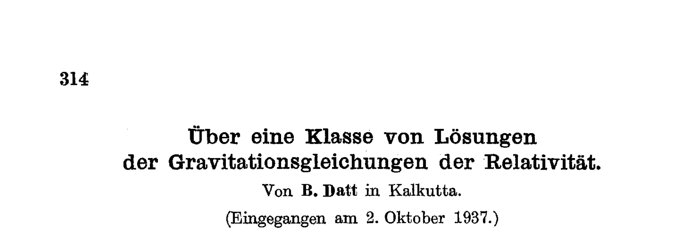
B. Dutt, “Über eine Klasse von Lösungen der Gravitationsgleichungen der Relativität” (1937). Independent study of gravitational collapse leading to the formation of a black hole, over a year before Oppenheimer and Snyder, by an Indian physicist from Presidency College named B. Dutt, who died in a botched surgery in 1940.
English translation: https://link.springer.com/article/10.1023/A:1026742707143
-
Thread on Babu Veer Kunwar Singh: https://x.com/Pluksa_/status/1650199394728448000
-
Thread on Pushyamitra Shunga (mostly from K P Jayswal’s work): https://x.com/HHMaharajaSawai/status/1659829931902390274
-
Procedures of Criminal profiling, forensics and interrogation in the Arthashastra: https://bharadvajatmaja.substack.com/p/csi-magadha-300-bc
-
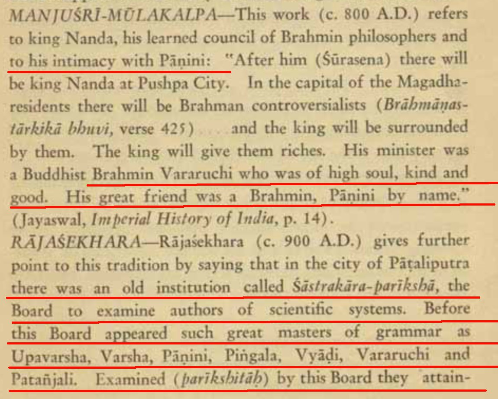
Highlighted passages referring to King Nanda’s scholarly circle and the later tradition of a Śāstrakāra-parīkṣā board in Pāṭaliputra examining authors of scientific systems. Source for competition (which Megasthenes called “Great Synod of India”): Kāvyamīmāṁsā (1.10), Rājasekhara, Manjuśrī-Mūlakalpa.
-
Sita Ram Goel on Netaji Subash Chandra Bose -
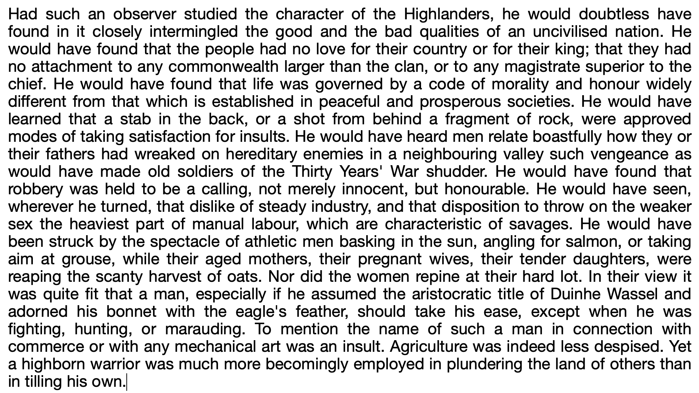
Thomas Babington Macaulay, History of England, Chapter 13 (1855). 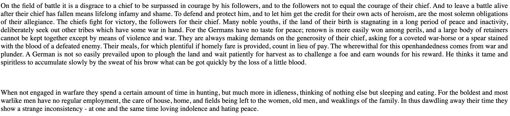
Tacitus, Germania (De Origine et Situ Germanorum), Chapters 13–15 (ca. 98 CE). Macaulay on Highlanders and Tacitus on Germanics: Aristocratic leisure, aversion to menial labour, anti-longhouse social arrangement.
-
Zoological sketch of a pufferfish by a Bengali painter named ‘Haludar/Halder’ working for EIC surgeon Francis Buchanan-Hamilton, from 1805. (here to contrast prevailing view that realistic/scientific art never existed in India) -
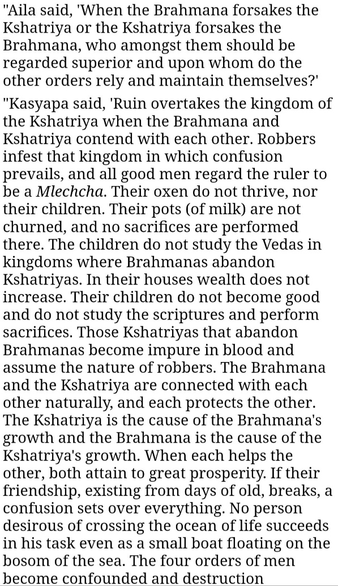
Bhishma Pitamah quoting the Kashyap-Aila dialogue to Yudhisthira, explaining symbiotic mutualism between Brahmins and Kshatriyas. -
Conservative Hindu nationalist intellectual lineage within the Bengal Renaissance: Radhakanta Deb, Ishwar Chandra Gupta, Bhudev Mukhopadhyay, Bankim Chandra Chatterjee, followed slightly later by Swami Vivekananda and Sri Aurobindo.
Bhudev Mukhopadhyay also wrote a speculative novel in the 1890s titled Swapnalabdha Bharater Itihas (“A History of India as Revealed in One’s Dream”). The work imagines an alternate history in which the Marathas win the Third Battle of Panipat and subsequently modernize India through administrative and technological reform. The text appears to be available only in Bengali: https://archive.org/details/in.ernet.dli.2015.340243/page/n5/mode/2up
-
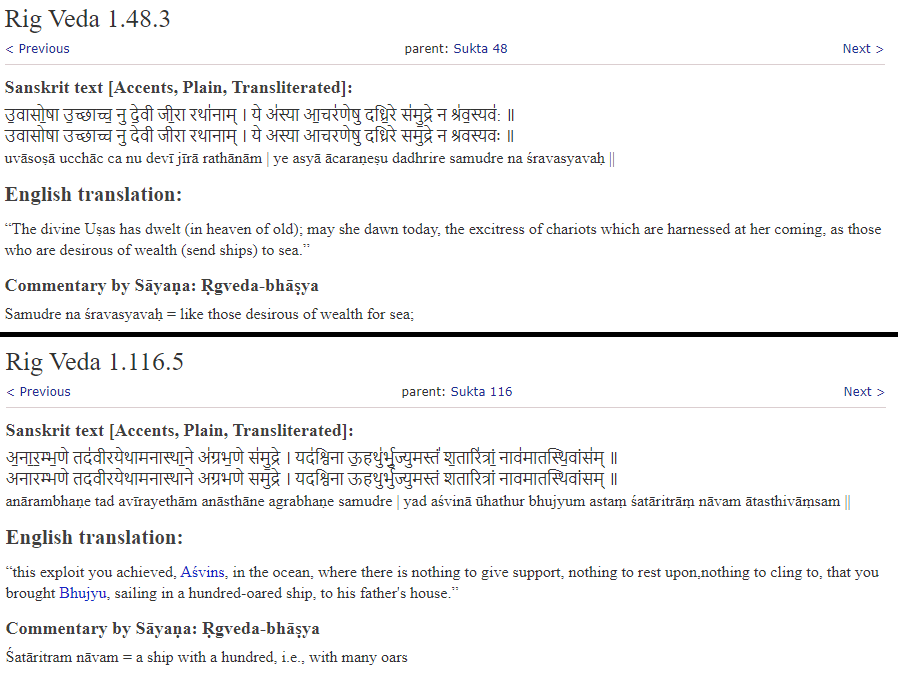
Sea-faring in the Rigveda -
Matthew Mosca, Indian Mendicants in Ming and Qing China.
A Scotsman, John Bell, recorded encountering a Brahmin from Madras at the Russia–Qing border in 1720. According to Bell, the Brahmin—along with several other Indians—was traveling north to pay his respects to the Dalai Lama and the Jebtsundamba Khutuktu, the head of Tibetan Buddhism in Mongolia.
Dorian Fuller on Indo-East African Trade in the 1st millenium BC: https://journals.openedition.org/oceanindien/698
-
S. R. Goyal, A History of the Imperial Guptas (Central Book Depot, Allahabad, 1967), Chapter 7.
The chapter examines Gupta political influence beyond the imperial frontiers, including Samudragupta’s relations with north-western powers and the Kidara–Sassanian conflict. Goyal suggests that Samudragupta assisted the Kidara Kushanas against the Sassanians, who were subsequently defeated in 367–68 CE. In this context he also interprets the embassy sent by Samudragupta to Rome in 361 CE as connected with these developments.
“Samudragupta, therefore, helped Kidara, who in turn defeated the Sassanians in AD 367–68. And perhaps the expressions Daivaputrashahi and Shahanushahi were applied to them. Samudragupta had sent an embassy to Rome in AD 361 in this connection only.”
-
Rhetorical thread on why Indian civilization peaked in the 7th to 8th century: https://x.com/arya_amsha/status/1491433806548508679
-
Article on Somayaji’s refusal to rely on the Gods for scientific insight and his upanishadic basis for logical procedural thinking: https://vriitrahan.wordpress.com/2021/07/21/twilight-of-hindu-science/
-
Kumārila Bhaṭṭa, Tantravārttika, section/verse 195.
वेदमूलत्वं पुनस्ते तुल्यकक्षमूलत्वाक्षमयैव लज्जया च मातापितृद्वेषिदुष्टपुत्रवन्नाभ्युपगच्छन्ति
"Moreover, their [the Buddhists'] claim that the Veda is the root/foundation — they do not accept this, with the very shame of being unable to match that standard, and with the hatred [characteristic] of a wicked son who hates his own mother and father."
-
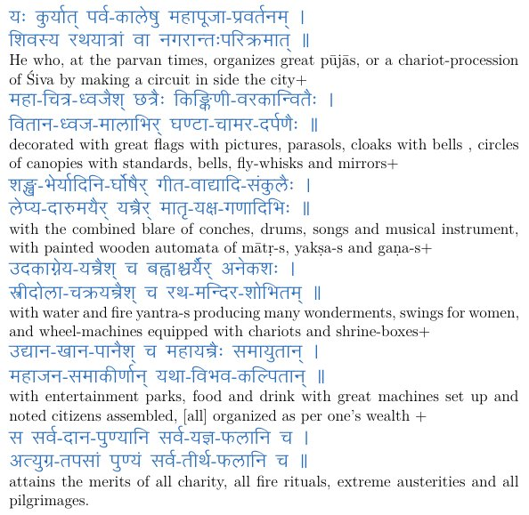
Description of a Saiva Rath Yatra (exact date not yet traced but the range is somewhere during the early/pre-classical age). Descriptions of: Lepa-dāru-mayair yantrair — automata made of painted wood. Depicting mātṛ-yakṣa-gaṇa figures — the Śaiva minor divine retinue. Udaka-agni-yantraiḥ — water and fire machines. Cakra-yantraiḥ — wheel machines with chariots and shrine-boxes. -
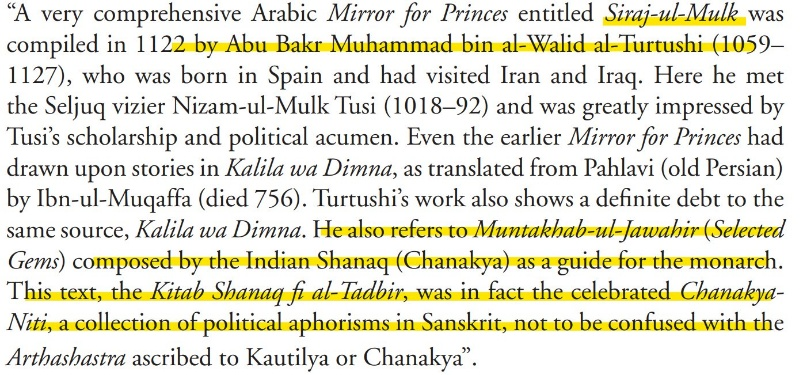
Two of Kautilya's works were present in 11thC Spain: The Andalusian jurist al-Turtushi refers to one Muntakhab-ul-Jawahir as a guide for kings, composed by one Shanaq, undoubtedly Kautilya; and also refers to his Canakya-Niti by the name Kitab Shanaq fi al-Tadbir. Kautilya as part of the curriculum of the education of Ottoman sultans like Kanuni Sultan Suleyman: https://manasataramgini.wordpress.com/2012/06/23/kautilya-on-knowledge/ . The Cefu Yuangui [冊府元龜] records that the Tang emperor Xuanzong received a copy of the Arthashastra from the nāstika monk Dharmacandra as tribute. Source: Article by Chen Ming.
-
Justice Radhabinod Pal's full dissent: https://www.worldcourts.com/imtfe/eng/decisions/1948.11.04_IMTFE_Judgment_Pal.pdf
-
Huan Tsang (Xuanzang) records that Indian administrative practice maintained separate custodians for archives and official records, with annals and state papers collectively referred to as ni-lo-pi-t’u (restored by Julien as Nilapita, “dark-blue store”). Related evidence from Bana’s Harshacharita and its analysis by V. S. Agrawala suggests that a systematic cadastral land survey may have been conducted during the Gupta period. Land revenue appears to have been assessed according to plough-units (sira), with the number of such units attached to village names in official records. These figures seem to have remained in use into the 7th century under Emperor Harsha. Sources: Harshacharita; The Deeds of Harsha; V. S. Agrawala, Critical Analysis of Bana.
-
Thread on Hindu Mathematics: https://x.com/arya_amsha/status/1269271229535383552
-
Kanhadade Prabandha describes the last stand of the Rajputs in the defence of the Somnath temple.
-
H. R. Harrop, a civil official encouraged by several British scholars, assembled a team to test classical Hindu architecture by reconstructing a mansion based on the Mānasāra. P. K. Acharya, who was chosen for the project, built the Svastika Mansion in Prayagraj. Acharya himself departed from certain Mānasāra prescriptions and argued that śāstra should be followed in spirit rather than mechanically in letter. Blindly applying cardinal orientations appropriate to the text’s original geographical context would produce poorly ventilated and badly lit buildings in northern India. This represents a form of scientific traditionalism: Mānasāra principles were developed in a southern climatic environment with different wind directions and sunlight patterns. Applying them uncritically in the north would produce impractical architecture. The Mānasāra series edited by P. K. Acharya might have served as a foundation for architectural development in post-1947 Indian public buildings, but this possibility was largely neglected.
-
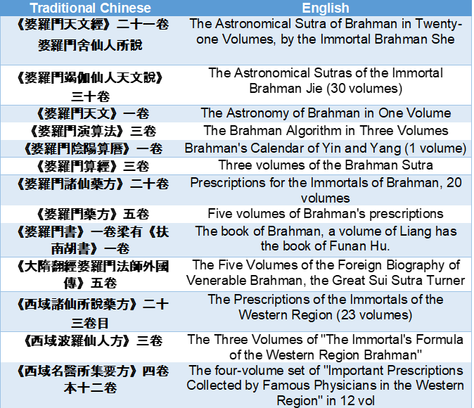
List of identifiable Hindu treatises on medicine, astronomy, and mathematics translated into Chinese during or before the Sui dynasty (581–618 CE). https://www.sacred-texts.com/chr/sbe/sbe05/suisu.htm
-
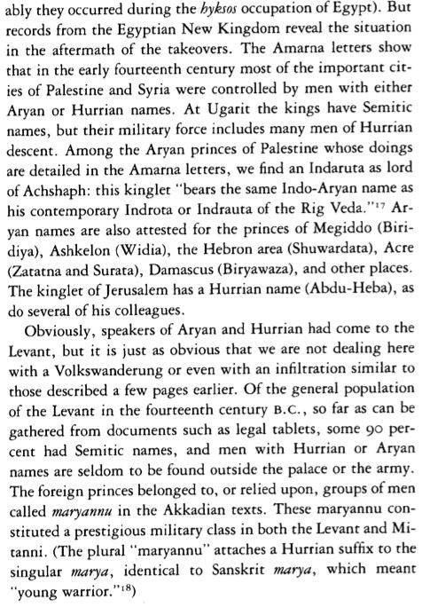
Evidence from the Amarna letters suggests that in the 14th century BCE parts of the Levant — including Palestine — were ruled by princes bearing Aryan (Indo-Aryan) names comparable to those found in the Rig Veda. The broader population appears to have been predominantly Semitic, but Indo-Aryan names occur among palace elites and military leaders, including Shuwardata (“Sun-given”) of Hebron and Indaruta of Achshaph.
-
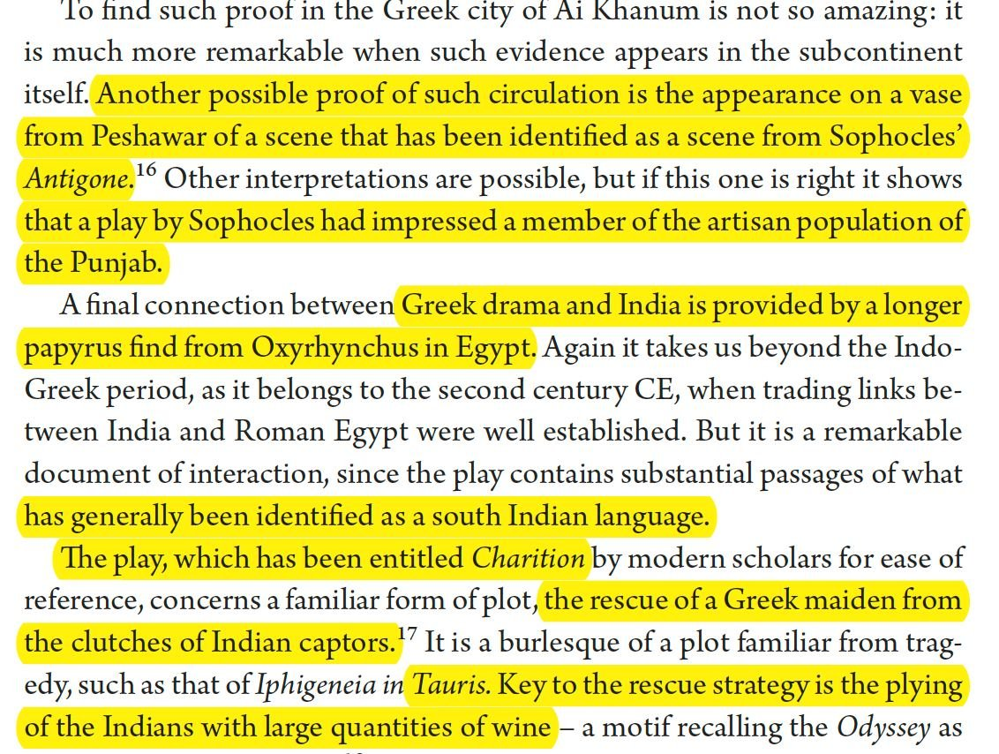
Several pieces of evidence suggest contact between Greek dramatic traditions and India. One proposed example is a vase from Peshawar depicting a scene identified by some scholars as Sophocles’ Antigone. Another is a papyrus discovered at Oxyrhynchus in Egypt containing the Greek play Charition, which includes extended passages interpreted as a South Indian language. These materials suggest the circulation and local adaptation of Greek dramatic motifs in India.
-
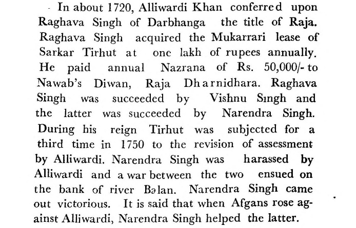
In 1750 the Bengal Nawab Alivardi Khan increased the revenue demand from Tirhut for the third time. The Maharaja of Darbhanga resisted the measure, and in the conflict that followed Raja Narendra Singh Thakur of Darbhanga Raj defeated the Nawab’s forces.
-
Names of Indian sailors as they appear in cave inscriptions on Socotra (off the coast of Yemen), dated roughly between the 1st and 6th centuries CE. https://www.uni-koeln.de/phil-fak/ifa/zpe/downloads/1990/084pdf/084195.pdf
-
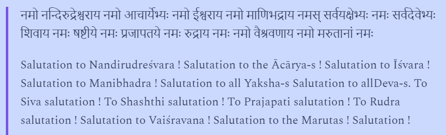
A salutation to Hindu deities from a 5th-century manuscript fragment discovered at Kucha (modern Xinjiang). The text invokes several Hindu deities and reflects a form of astika religious practice, possibly associated with patronage by the Hephthalites.
-
Thread on the Cattars (or Cathiars). The Cattars are described as Brahmin war bands reported across Kerala and Tamil Nadu as well as other parts of southern India, where they were also referred to as ghatam or kalam. https://x.com/TPeshwa/status/1688263681514012674
-
Sawai Jai Singh's reorganization of various armed akharas into a more formal fighting force intended to defend and enforce the centralized Vaishnava religious order he was promoting. Source: Mobilizing Krishna’s World.
-
Threads discussing Akbar’s near-apostasy: https://x.com/Indrauta/status/1573992121136287749 ; https://x.com/Rjrasva/status/1574013155801534464 ; https://x.com/Kishkind2/status/1170331121722118144
-
List of books owned by Bal Gangadhar Tilak while in jail, consisting largely of commentaries on Hindu religious literature as well as works on mathematics, German, and chemistry. https://nationalistspeeches.wordpress.com/2018/10/24/tilaks-study-in-jail/
-
Thread examining and challenging the claim that the Kushanas were a Buddhist polity. https://x.com/arya_amsha/status/1348301887896834049
-
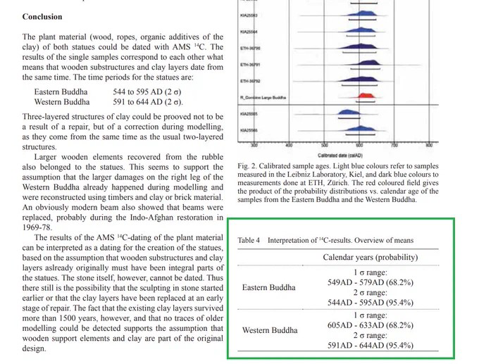
Geological dating indicates that the Bamiyan Buddhas were constructed during the reigns of Pravarasena II and Narendrāditya Khinkhila (c. 597–633 CE), rulers associated with the Hindu Alkhon Huns. Source: Catharina Blänsdorf, Marie-Josée Nadeau, Pieter M. Grootes, Matthias Hüls, Stephanie Pfeffer, and Laura Thiemann, “Dating of the Buddha Statues — AMS 14C Dating of Organic Materials,” Monuments and Sites 19 (2009), pp. 231–236. Published in: Michael Petzet (ed.), The Giant Buddhas of Bamiyan: Safeguarding the Remains. ICOMOS / Bäßler Verlag, 2009.
-
Thread on Hemchandra “Hemu” Bhargava: https://x.com/HHMaharajaSawai/status/1670818156288540672
-
“Japanology for Hindus” — full PDFs of primary sources and books describing how Japan dealt with Christian missionaries (most prominently Aizawa Seishisai): https://archive.org/details/AntiForeignismAndWesternLearningInEarlyModernJapan/Anti-Foreignism%20and%20Western%20Learning%20in%20Early%20Modern%20Japan/page/211/mode/2up
-
Gita in Classical Greek: https://t.co/KMFtp9IrHx ; Gita in Classical Latin: https://t.co/2rLBc7XBp5
-
Thread on the dismal preservation of ancient and medieval manuscripts by the Indian government: https://x.com/suhasm/status/1690719402952396803
-
Udayana’s Nine Proofs for the existence of Īśvara
Nyāyakusumāñjali (PDF)1. Kāryatvāt — Because the world is an effect
Every composite effect requires an intelligent maker. The universe is the largest effect. It requires the largest maker — omniscient, omnipotent. That is Īśvara.2. Āyojanāt — Because atoms were combined
Atoms are inert and cannot combine themselves. The first act of combination required an intentional agent who knew what to make and how. That agent is Īśvara.3. Dhṛteḥ — Because the world is sustained
The cosmic order does not collapse. Ongoing stable sustenance requires ongoing conscious upholding. That sustainer is Īśvara.4. Saṃharaṇāt — Because dissolution is ordered
Cosmic dissolution happens systematically rather than chaotically. Ordered withdrawal requires a directing intelligence. That dissolver is Īśvara.5. Padāt — Because language has meaning
Word–meaning relations are conventional rather than natural. Conventions must be established and taught. The first humans had no prior teacher; therefore someone outside the human chain established the original semantic relations. That establisher is Īśvara.6. Pratyayāt — Because of universal human cognition
The intuition of a supreme being appears across cultures and eras. Cognition requires an object; a universal cognition pointing to nothing is inexplicable. Its object is Īśvara.7. Śruteḥ — Because of scriptural testimony
The Vedic texts unanimously testify to Īśvara. In Nyāya epistemology, testimony from reliable speakers is a valid pramāṇa. Their object is Īśvara.8. Anvayataḥ — Because moral order is maintained
Karma reliably produces appropriate results across all beings and times. This requires an omniscient administrator who tracks every action and delivers every consequence. That administrator is Īśvara.9. Saṃkhyāviśeṣāt — Because number had to be imparted
Number is not intrinsic to things but produced by cognition. Ordered creation required specific numerical arrangements of atoms. No finite mind could cognize all atoms simultaneously; an omniscient mind whose cognition imparted number to all atoms at once must exist. That mind is Īśvara. -
Thread on Tamil and Hindu Javanese influence on European medicine (through Jesuit translations of Sillari Kovai and related works): https://x.com/arya_amsha/status/1450889782016438273
-
Three Parsi men from Bombay — Adi Hakim, Jal Bapsola and Rustom Bhumgara — were the first Indians to travel around the world by bicycle. Starting in 1923, the journey took four years to complete. They later wrote about their experiences in With Cyclists Around the World. https://books.google.co.in/books?id=R2g9CgAAQBAJ&pg=PT6&source=gbs_selected_pages&cad=1#v=onepage&q&f=false
-
Thread on the first recorded Indian sniper battle (during the Battle of Samman Fort): https://x.com/JhalaZalimSingh/status/1701450197128380877 (source: Hari Ram Gupta)
-
“Medieval Shinto as a form of Japanese Hinduism” — Iyanaga Nobumi: https://www.persee.fr/doc/asie_0766-1177_2006_num_16_1_1260
-
Gautama Siddha, an Indian astronomer active in Tang China: https://brill.com/display/book/9789004527256/BP000030.xml
Gautama Siddha became the Founding Baron (開國男) of Jiangning County in Nanjing in 728. Emperor Xuanzong later appointed him Grand Master of Imperial Entertainments. His son Gautama Zhuan began his career as a military officer.
-
Niche Technological Evolution in Ancient India: https://bharadvajatmaja.substack.com/p/technological-evolution-and-inferences
-
Thread on the Golden Age of India: https://x.com/arya_amsha/status/1220063382658699264
-
Transport and Communications in India Prior to Steam Locomotion, Vol. I: Land Transport: https://www.indianculture.gov.in/ebooks/transport-and-communications-india-prior-steam-locomotion-vol-i-land-transport
-
Thread on Pan-Indian traditions of hero cults: https://x.com/TPeshwa/status/1725772973104038224
-
Selections from J. Z. Holwell’s Interesting Historical Events, Relative to the Provinces of Bengal, and the Empire of Indostan (1765–71). Holwell criticizes European writers who portrayed Hindus as irrational idolaters and argues that many such judgments arose from misinterpretations of Brahminical texts and traditions. He presents Brahmins as custodians of an elaborate theological and philosophical system, and suggests that early European accounts often failed to grasp the intellectual and doctrinal framework underlying Hindu religious practice.
Full text: https://archive.org/details/dli.ministry.03229/mode/2up
-
Moncacht-Apé, a Yazoo–Tunica explorer of the late 17th–early 18th century, is reported to have travelled across much of North America—from the Atlantic coast to the Pacific—well before the period of formal transcontinental exploration by Europeans.
Account of his journeys: PDF
-
F. S. Growse served as District Magistrate in western parts of the United Provinces. An admirer of Indian art, architecture, and craftsmanship, he documented the heritage of Mathura and surrounding towns and even commissioned buildings in indigenous styles. His work reflects a type of civil servant who engaged seriously with the civilization he administered—something largely absent among the modern bureaucratic class.
Photographs documented by him: thread
Memoir: PDF
His translation of Tulsidas’ Ramcharitmanas: PDF
-
Thread on early Indian development of numerical procedures for extracting cube roots: https://x.com/selfvision/status/1662264986406899712
-
Thread discussing the institutional vilification of E. O. Wilson following his rejection of biological blank-slatism and his defense of evolutionary explanations for human behavior: https://x.com/s_decatur/status/1727475227188166688
-
Melanin index variation for males and females across selected Indian populations: https://t.co/nTEpJqxQGo
-
“The Atomic Bomb Considered as a Hungarian High-School Science Fair Project” — an essay noting the striking overrepresentation of Hungarian-born Jewish scientists in the intellectual core of the Manhattan Project (figures such as Szilard, Wigner, Teller, and von Neumann). The piece uses this cluster to illustrate the extraordinary concentration of mathematical and theoretical talent produced by that milieu in early-20th-century Central Europe.
-
Eccentricities and procedural peculiarities of the Indian Census in the 1930s: https://x.com/HeathensWeb/status/1735169122923917350
-
Early nineteenth-century French documentation on Maratha–British East India Company relations and the Anglo-Maratha War of 1802–06, Guerres et paix (“War and Peace between the Marathas and the British around 1800”), published by the Presses Sorbonne Nouvelle.
-
Account recommended for global anthropological commentary on Twitter: https://x.com/crimkadid . The threads examine topics such as the medieval English agricultural foundations of the Industrial Revolution, genetic and environmental explanations for Northern European cognitive outcomes, nutritional constraints among pastoral populations, Christianity’s role in enforcing monogamy, and the historical emergence of non-arranged marriage systems in Europe.
-
Viśvaguṇādarśa — a Sanskrit satirical travel narrative in which two gandharvas, Kṛśānu and Viśvāvasu, travel across India in identical aerial vehicles while commenting on the virtues and defects of the regions they encounter. Kṛśānu is hypercritical and fault-finding, whereas Viśvāvasu tends to take a more charitable view of what they observe.
English translation: PDF
Example — Canto 20: Description of Madras (Cannappaṭṭaṇa)
Sanskrit:
अथ चन्नपट्टण(मद्रास)वर्णनम् २०॰
इति विमानमन्यतः प्रधापयन्मतो दृष्ट्वा—
एषा कैरविणी विशल्यकरणी दोषाशुगार्तात्मना-
मेत्द्रोघिस पार्थेसारिथिरिति रूयातः सिमन्धे हरिः ॥
यत्पादाम्बुजचुम्बिनां सुरपतेः कोटीरगारुत्मत-
स्तोमानां तुलसीदलप्रकरतो नो वेद भेदं जनः ॥ २६०॥“Thus viewing the city from the aerial vehicle while passing — here Viṣṇu, known as Pārthasārathi (the charioteer of Arjuna), residing at the Triplicane shrine, is the remover of the arrows of faults for those afflicted by them. For those who kiss His lotus feet, people know no distinction between the heaps of gems on Indra’s crown and a cluster of tulasī leaves.”
Kṛśānu then launches into a severe critique of the “Hūṇas,” accusing them of failing on two axes simultaneously: ritual-social order and bodily purity, both of which fall under the broader Sanskritic concept of śauca.
Kṛśānu’s Verdict on Madras — The Hūṇa Problem
Sanskrit:
कुत्सिततमामेवं स्पष्टयति—हूणा इति । करुण्या दयया हीनाः हूणाः । ब्राह्मण-गणं माझनसमुदायं तृणवत् तृणसिव न गणयन्ति । तुच्छोक्वैन्तीत्यर्थः । किञ्च ये हूणाः शौचं पुरीषोत्सगोनन्तरं गुदक्षालनस्थानक्षमापि न आचरन्ति, किमुत मृज्जलदिग्धा स्नानादिरूपं, अत एव तेषां दोषाः पापातिः पारे वाचां वाचा वक्तुमशक्या इत्यर्थः ॥ २६२ ॥“The major fault Kṛśānu identifies clearly is this: the Hūṇas lack compassion. They do not regard the assembly of Brahmins even as straw. Moreover they do not even practice washing the posterior after relieving themselves, let alone the fuller practices of bathing with water and clay. Their faults are therefore beyond the power of words to enumerate.”
Kṛśānu’s Lament to Brahmā
Sanskrit:
शौच्यागिषु हूणकादिषु धनं शिष्टेषु च क्षिष्टाम्
दुर्मेधसु धरापिपत्यमतुलं दक्षेषु मिक्षाटनम् ॥
लावण्यं ललनासु दुष्कुलभवास्व्यासु नीरूपताम्
कठं सृहत्वा त्वया हतविधे किं नाम लब्धं फलम् ॥ २६३ ॥“O cruel creator, Brahmā! You have placed wealth among the impure Hūṇas and poverty among the refined; unrivalled lordship of the earth among the dull-witted and begging among the capable; beauty among women of vile lineage and ugliness among those of noble birth. Having created the world thus, what fruit have you gained from such an arrangement?”
-
Modern discussions often assume Hinduism privileges universal asceticism. Classical texts frequently argue the opposite: premature renunciation is treated with suspicion, while the householder (gṛhastha) is the structural foundation of religious life.
Claim 1 — The Three Debts (Ṛṇa-trayī)
“A Brāhmaṇa on birth is born with a threefold debt: to the Ṛṣis through austerity, to the gods through sacrifice, and to the ancestors through offspring.”
Taittirīya Saṃhitā 6.3.10.5; Śatapatha Brāhmaṇa 1.7.2.1
Claim 2 — The Householder as the Foundation
“As all rivers, great and small, find their resting place in the ocean, so men of all orders find protection with the householder.”
Mahābhārata, Śānti Parva 269; Manusmṛti 3.77–78
Claim 3 — Aitareya Brāhmaṇa on Asceticism
“The son is the supreme light.”
Aitareya Brāhmaṇa 7.13
-
Mémoire pour la Compagnie des Indes. Contre le sieur Dupleix — a contemporary French memorandum criticizing Dupleix’s administration and policies in India.
-
Thread on Richard Coudenhove-Kalergi — a figure often misrepresented in pseudo-historical narratives surrounding “Europa: The Last Battle”.
-
Balkrishna, The Industrial Decline in India (1917).
-
Excerpts from M. C. Ricklefs, Islamisation and its Opponents in Java: 1930 to Present.
-
Examples of businesses, industries and charitable foundations owned by the Maharaja of Darbhanga: Darbhanga Laheriasarai Electric Supply Corporation, Darbhanga Aviation, Rameshwar Jute Mills, Darbhanga Cold Storage, Darbhanga Engineering Works, among others.
Source: Amar Kant Mishra, Ruling Dynasty of Mithila (2018).
-
How the EEOC functioned as a quasi-policing institution inside the American corporate system, compelling companies to finance enforcement of its anti-discrimination framework.
-
Thread with excerpts from Terry Martin’s The Affirmative Action Empire: Nations and Nationalism in the Soviet Union, 1923–1939.
-
Thread examining the dysgenic effects of war through the lens of the American Civil War, drawing on the work of Dr. Harvey Ernest Jordan.
-
England’s eugenic rise discussed through Alan Macfarlane’s thesis in The Origins of English Individualism.
-
Conservationist purpose of princely hunting traditions in India.
-
The 2nd-century pagan critic Celsus and his arguments against Christianity.
-
Associations between infant screen use, electroencephalography markers, and later cognitive outcomes.
-
Excerpts from Johann Ewald’s A Treatise on Partisan Warfare (1785).
-
Theodore Dalrymple on the fragility of civilization — “The Last Piano in Monrovia.”
-
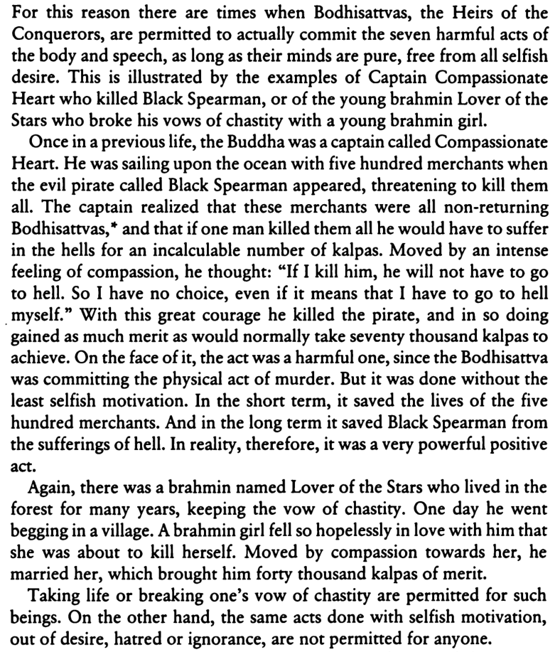
Example from Buddhist literature illustrating the doctrine of “skillful means” (upāya): a Bodhisattva captain kills a pirate threatening five hundred merchants, accepting the karmic burden himself in order to save both the merchants and the pirate from far greater suffering.
Source: Patrul Rinpoche, Words of My Perfect Teacher.
-
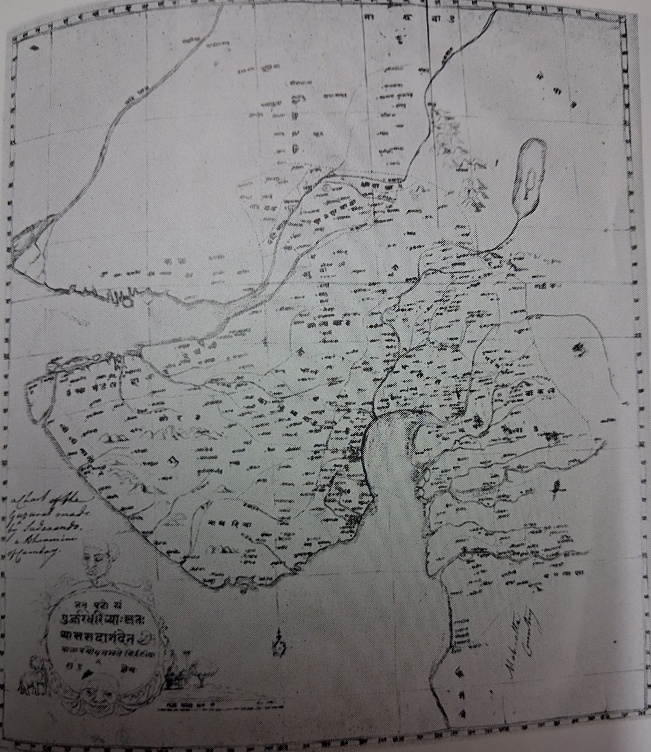
Map of Gujarat by Sadananda Pandit, 1770. -
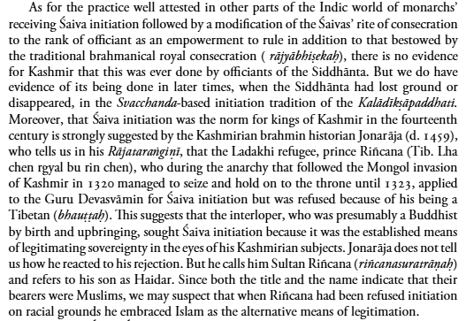
Rinchan’s request for śaiva initiation being rejected partially leading to his conversion to islam and earlier islamisation of Kashmir. Source: Alexis Sanderson, “The Śaiva Age — The Rise and Dominance of Śaivism during the Early Medieval Period,” in Shingo Einoo (ed.), Genesis and Development of Tantrism, Institute of Oriental Culture, University of Tokyo, 2009 (discussing Jonarāja’s account in the Rājataraṅgiṇī).
-
“The Boar Hunt” by Ernst Jünger.
https://juengertranslationproject.substack.com/p/the-boar-hunt-ernst-junger-033
-
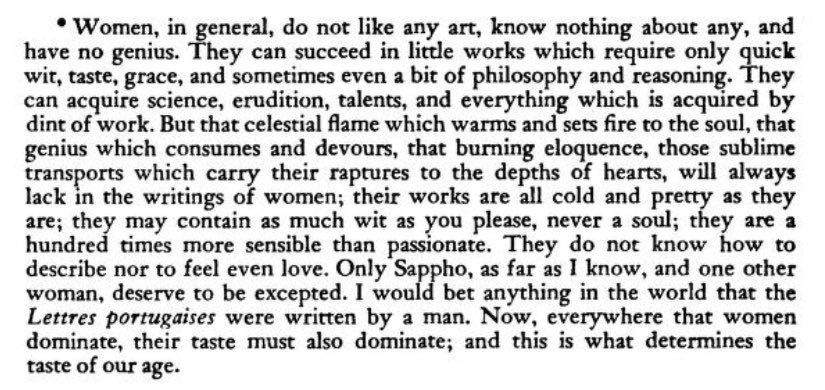
Passage from Jean-Jacques Rousseau. The sentiment is reminiscent of the style of Robert Burton’s The Anatomy of Melancholy — a sprawling early-modern compendium (first published 1621) that assembles medical theory, philosophy, classical quotations, literary anecdotes, and social commentary into a vast catalogue of reflections on melancholy, human passions, learning, love, and intellectual life.
-
Yantras or Mechanical Contrivances in Ancient India by V. Raghavan (1956).
-
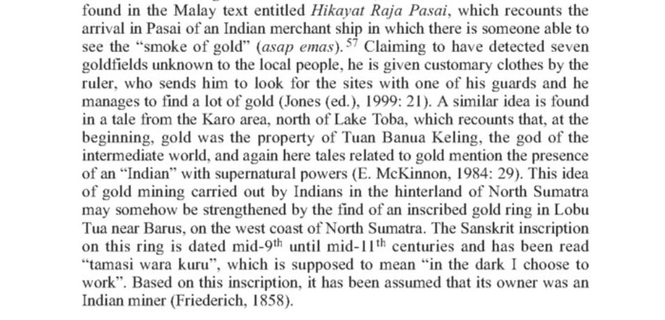
A gold ring found in North Sumatra, dated between 9th to 11th century, had an inscription in Sanskrit, which read “in the dark I choose to work.” The toponym of SE Asia as "Suvarnabhumi" starts to make sense you realize how much the Indians were involved in mining gold there. -
Thread on Hari Chand’s Ladakh campaigns: https://x.com/TPeshwa/status/1950025259152797776
-
Brief threads on narrative inversions of Indra (and Varuna) in Zoroastrianism and non-Vedic Hinduism: https://x.com/Ugra__status/1950647848237928949 ; https://x.com/dhanyavisnu/status/1950648959439155235
-
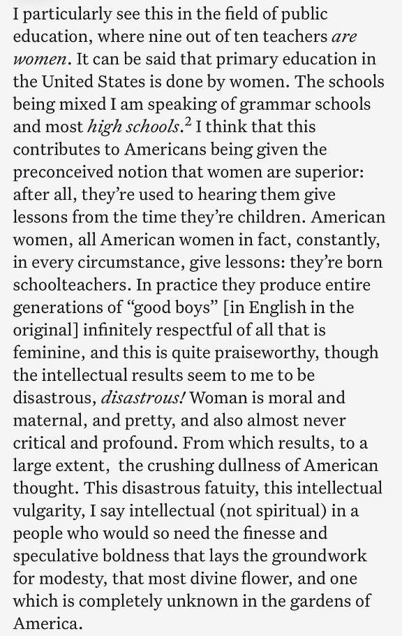
Celine on the disastrous effect of American women teachers’ moralizing on public education. -
On Prahlada being elevated from a Daitya in the Vedas to a devotee of Vishnu in non-Vedic traditions: https://manasataramgini.wordpress.com/2013/07/25/a-brief-note-on-prahlada-hiranyakashipu-and-an-early-narasimhakhyana/
-
Thread on the Avatar/Ardhadeva concept in the Vedas: https://x.com/blog_supplement/status/1381800203569729539
-
Gandhi against stray dogs: https://www.civilsocietyonline.com/cover-add-ons/gandhi-on-stray-dogs-ahimsa-and-society/
-
“Not everyone is allotted the chance to become a personality; most remain types, and never experience the rigor of becoming an individual.”
Hermann Hesse
-
Rebellious Prophets — Stephen Fuchs.
-
T. R. Fehrenbach on the Scots-Irish and their anti-clerical, anti-hierarchical Calvinism: https://x.com/Indrauta__/status/1957405547197591647
-
Historical evolution of Vinayaks (malignant beings, more feared than worshipped) into Ganesha: https://x.com/Saatavata/status/1936304426999775308
-
Roots of Sri-Vishnu in the Rigveda: https://x.com/dxrsam_0/status/1961835492854673599
-
Studies on conflict as an inevitable consequence of ethnic diversity: https://x.com/knrd_z/status/1297300855222341632
-
Letter from Kaiser Wilhelm to Maharaja Sumair Singh Bahadur The letter presents Germany as a natural ally of Indian rulers against the British Empire, arguing that Britain has deliberately isolated Indian states from independent foreign relations. It frames the ongoing war as unjustly initiated by Britain, France, and Russia, and claims that Germany and its allies seek to weaken British global dominance. The Kaiser appeals to the Maharaja to support efforts toward Indian independence, promising political and economic autonomy for a future free India while emphasizing that Germany does not intend to interfere in India’s internal affairs. The broader aim is to encourage Indian rulers to align with Germany during the conflict as part of a larger anti-British geopolitical strategy.
-
Ancient Indian male beauty standards according to scriptures, itihasas, Charaka and Varahamihira: https://x.com/arya_amsha/status/1416434509461954565
-
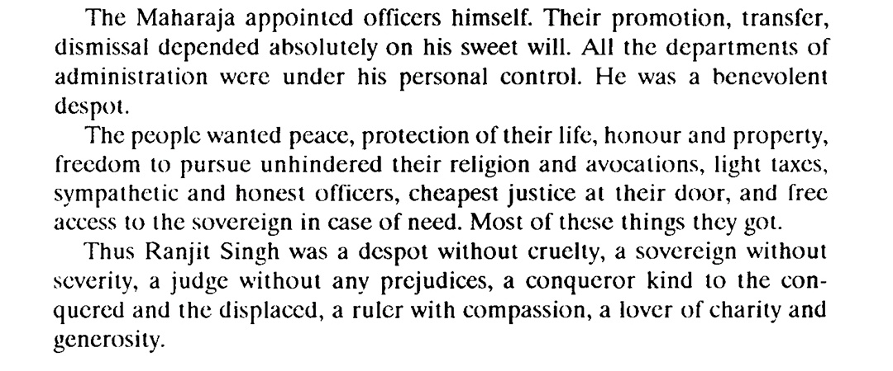
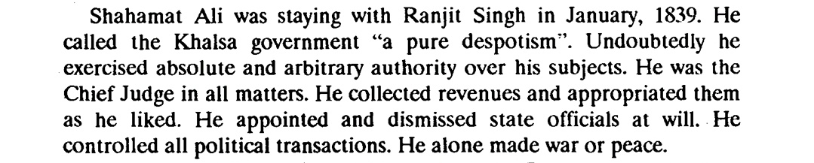
Ranjit Singh’s enlightened despotism Contemporary descriptions portray Maharaja Ranjit Singh as exercising complete personal authority over administration while maintaining low taxation, religious freedom, accessible justice, and protection of life and property. Despite being described as an absolute ruler, he is repeatedly characterized as benevolent, pragmatic, and notably free of the harsher traits associated with despotism.
-
Balo-kale gumbat, Swat Valley, 1st–2nd century CE — true hollow dome construction. Interior and exterior views of the Balo-kale stupa showing a hemispherical stone dome constructed with concentric courses and a central aperture. This is a pre-Islamic example of true dome construction in the subcontinent (Gandhara), directly contradicting the common claim that domes were introduced to India by Muslim rulers. The structure demonstrates that the knowledge and execution of load-bearing domical architecture existed in the region more than a millennium earlier.
Source: M. Meister, “On the Development of the Stupa Dome in India,” Artibus Asiae, Vol. 40, No. 2/3 (1978); photographs courtesy Italian Archaeological Mission (IsMEO).
-
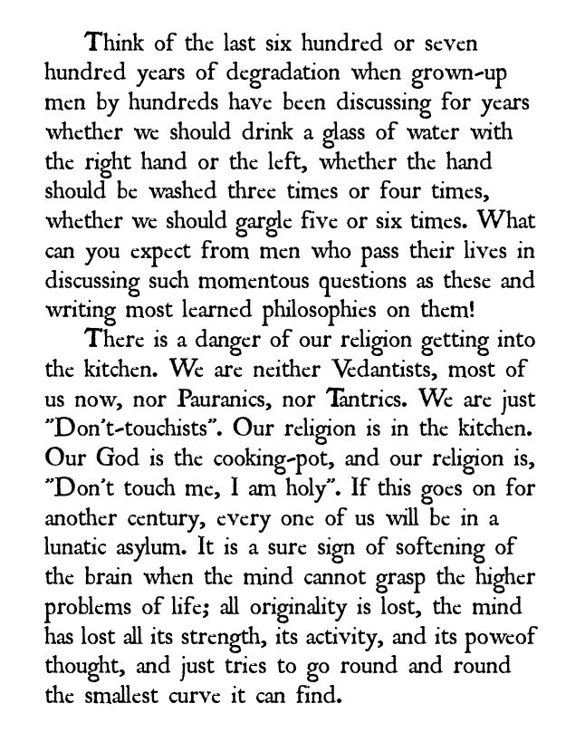
Vivekananda on purity spirals and the kitchen religion Swami Vivekananda, “The Future of India,” in The Complete Works of Swami Vivekananda, Vol. 3.
-
Early Temple Construction in India (4th–2nd century BCE)
Earliest structural evidence: Converges on the 4th–2nd century BCE. Saurashtra punch-marked coins (~350 BCE) show temple-like apsidal forms; Yaudheya coins (3rd–2nd century BCE) show similar motifs; apsidal plans appear at Nāgārjuṇakoṇḍa.
Archaeological sites: Bhir Mound (Taxila) pillared structure with mother goddess images interpreted as a temple (Marshall); Bhāgavata temple at Vidiśā built over an earlier shrine destroyed c. 3rd century BCE.
Madan Mohan Temple, Vṛndāvana: Base bricks (52×26×8 cm) match Mauryan dimensions; successive layers correspond to Śuṅga, Kuśāṇa, Gupta, post-Gupta, and medieval phases. Inscribed bricks reading “Thāna Bhāgavatena Nanaṭaken Kāritaṃ” (Brāhmī, 3rd–2nd c. BCE) confirm continuous Brahmanical religious use from the Mauryan period onward.
Guḍimallam (Parasurameśvara): Original apsidal brick sanctuary (2nd–3rd century CE), later rebuilt in stone (12th century, Vikrama Chola). Structural replacement without interruption of function appears to be the norm.
Theological transition: From temporary Vedic sacrificial ground to permanent shrine housing a resident deity. Rooted in Agamic ritual systems (consecration, daily worship, iconography), independent of the later Puranic narrative framework.
Sources: John Marshall, Taxila (1951); Mishra (1983); Himanshu Prabha Ray, JSTOR
-
Pre-Puranic Bhāgavata Iconography and the Vedic Roots of Image Worship
Chronology: Vāsudeva-Kṛṣṇa iconography traceable to at least the 4th–5th century BCE.
Pāṇini evidence: “Vāsudevārjunābhyāṃ vun — abhyarhitaṃ ca pūrvaṃ nipatati.” Interpreted by Dandekhar to show Vāsudeva cult had already superseded the Aindra-Arjuna cult.
Material evidence: Tikula rock art (3rd–2nd century BCE) shows Vāsudeva, Saṅkarṣaṇa, Ekānaṃśā; Agathocles coins (~180 BCE) depict Vāsudeva and Saṅkarṣaṇa; Śuṅga-era Viṣṇu image (~2nd century BCE) at Malhār.
Epigraphic evidence: Heliodorus Pillar (~113 BCE) records a Greek ambassador declaring himself Bhāgavata; companion inscriptions at Mathurā (Vasu doorjamb), Hāthībādā-Ghosuṇḍī, Nāneghaṭ.
Trade network spread: Vṛṣṇi triad at Berenike (Egypt, ~1st century CE), indicating presence in Indian merchant networks across the Red Sea.
Śaiva parallel: Guḍimallam liṅga (~1st BCE–1st CE) shows fully developed iconography derived from Agamic rather than Puranic framework.
Greek testimony: Megasthenes and Arrian record “Heracles” worshipped in Mathurā (Vāsudeva); Porus’ army carried the image; Strabo distinguishes plains “Heracles” (Vāsudeva) from mountain “Dionysus” (Śiva).
Implication: Image worship is not a post-Vedic degeneration but contemporaneous with late Vedic developments. Agamas, not Puranas, form the operative canonical basis.
Vedic theology context: Indra–Viṣṇu relationship is functional complementarity. Ṛgveda 1.154, 1.155, 7.100 describe Viṣṇu establishing cosmic space within which Indra operates, without later hierarchical structuring.
Sources: Dandekhar on Pāṇini; Heliodorus Pillar inscription; Megasthenes’ Indica via Arrian and Strabo; Ṛgveda 1.154, 1.155, 7.100
-
Sangam literature records a mother who, on hearing that her son had fled battle, goes to the battlefield and verifies that he did not die in disgrace.
“They said, ‘Your son turned his back in battle.’ She went to the battlefield. She saw him fallen there, and she rejoiced.”
Purananuru 279; translation from A. K. Ramanujan, Poems of Love and War (Columbia University Press, 1985)
-
Jan Assmann’s The Price of Monotheism introduces the concept of the “Mosaic Distinction” — a division between what he calls primary and secondary religions. Primary religions emerge organically within a culture and are embedded in the natural and cosmic order. Secondary religions, by contrast, originate in a specific historical founding moment and define themselves through a sharp distinction between true and false belief, often producing exclusivist identities and doctrinal rigidity.
Full text: The Price of Monotheism — Jan Assmann
-
"Epitaph of Li Dan, also named Li Tuosuo, deceased Prefect of the Province of Han, who lived in Pingji, Zhao country, descendant of Bo Yang. His grandfather was Feng He, a tribal ruler, who worked hard and maintained the standing of his lineage. The deceased was a honorable man, who traveled from Jibin to the Imperial court during the Zhengguang era (520–525 CE). Because he was a Brahmin, Emperor Taizong offered him plenty of gifts and rewards. The deceased died at the age of 59, on April 9th, in the 4th year of the Baoding era (564 CE), year of the Wood Monkey, at his home in Wanjili. The Emperor gave him the title of "Prefect of the Province of Han", and he was buried in the leap month of that same year in Zhonxiangli. His elder son Panti, fearing cataclisms, and afraid the name of his father might be forgotten, reverently wrote this inscription on a black stone, so that his story can be transmitted unblemished."
Epitaph of Li Dan, written by his son Panti (564 CE)
Chinese researchers report the genomes of a supposed V1 (505–564 CE) from China named Li Dan and his clearly Han wife.
Study: Genomic analysis of Li Dan (6th century CE)
He appears consistent with possible upper-caste H ancestry. However, given the scale and nature of the claims made in the epitaph, there is no guarantee that he was in fact a genuine V1 rather than a claimant adopting that identity.
Genetically, he does not fall squarely within previously defined Indian subcontinent cline profiles. Instead, he lies within or very close to a Burusho cluster. This points more plausibly to a north-western frontier origin, such as Gandhāra.
This does not resolve the question in a straightforward way: Buddhist lineages with Kashmiri Brahmin ancestry are known to have mixed across caste boundaries and to have incorporated Burusho and/or East Asian-like ancestry. The genetic signal therefore complicates rather than settles the claim.
-
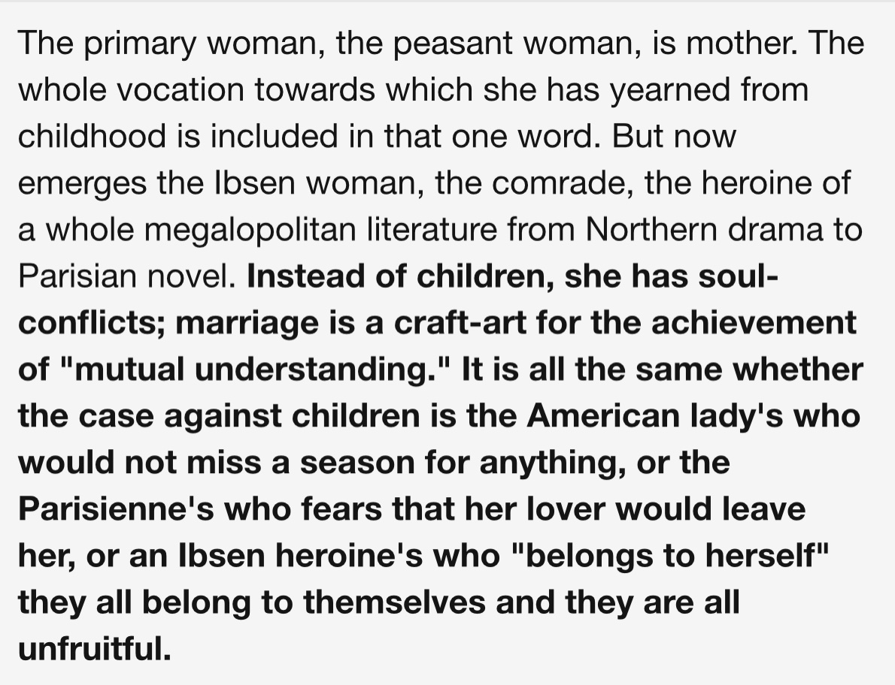
Oswald Spengler, The Decline of the West, Vol. II (1918–1922), on the transformation of womanhood and civilizational fertility patterns. 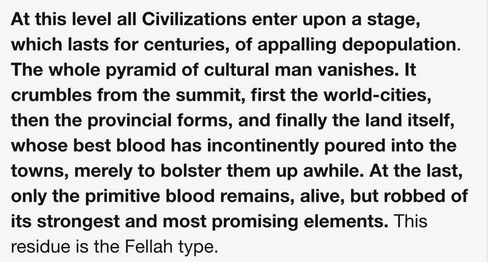
Oswald Spengler, The Decline of the West, Vol. II, on depopulation, urban concentration, and the “Fellah” condition. 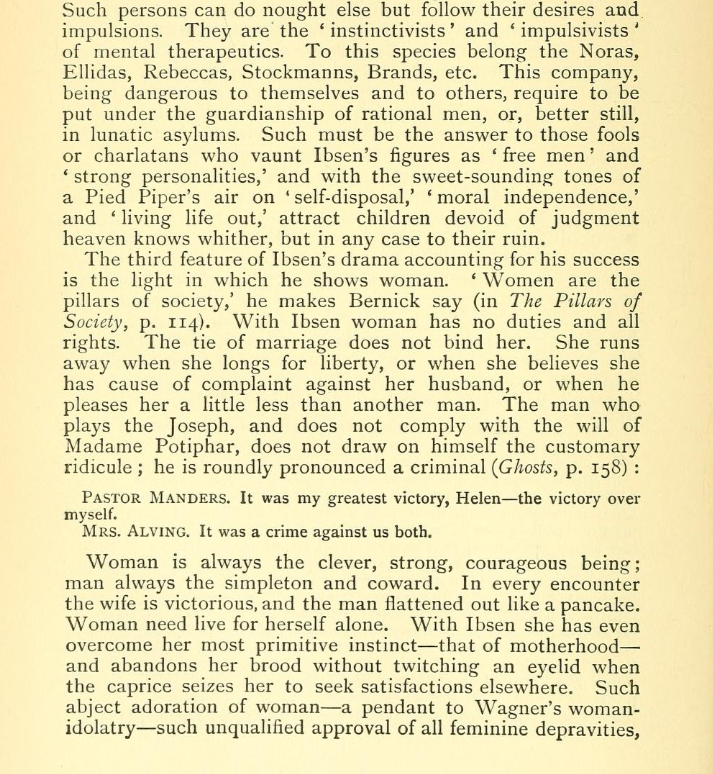
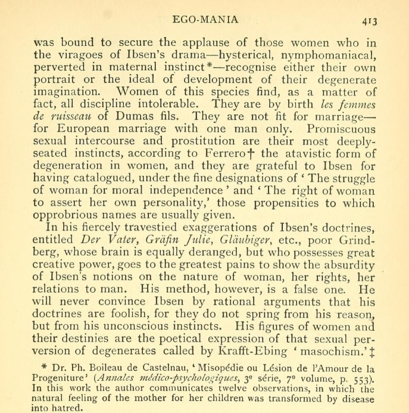
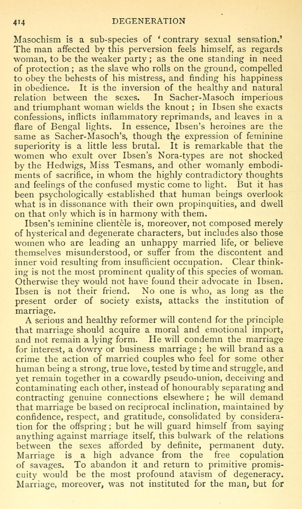
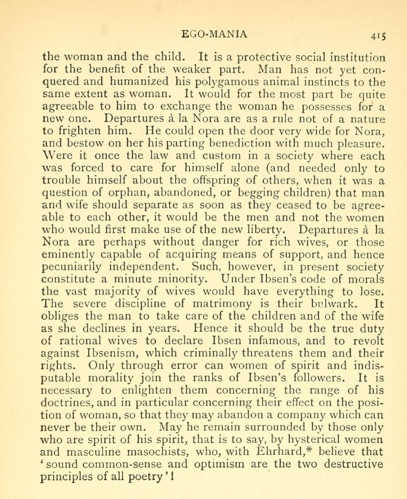
Max Nordau, Degeneration (1892), sections critiquing Ibsenism, individualist morality, and shifts in sexual and social norms. Spengler describes a civilizational shift in which the archetype of woman moves from mother to self-directed individual. In this phase, marriage becomes a psychological or aesthetic arrangement rather than a reproductive institution, and large urban cultures enter a prolonged period of depopulation. He links this to the concentration of population in world-cities, the draining of vitality from the countryside, and the eventual emergence of a residual, de-energized population he calls the “Fellah” type. Nordau approaches similar developments polemically, arguing that modern literary and social ideals—especially those associated with Ibsen—promote the rejection of motherhood, the weakening of marital obligation, and the prioritization of individual desire over social continuity. He treats these tendencies as pathological, associating them with instability, sexual inversion, and the breakdown of inherited norms governing family and reproduction. Taken together, the excerpts describe a transition in which reproduction ceases to be a central organizing principle of life. In contemporary terms, this corresponds to persistent below-replacement fertility in highly urbanized societies, the normalization of delayed or foregone childbearing, and the redefinition of marriage away from lineage and toward individual fulfillment.
-
Example verse from the Mahāsubhāṣitasaṃgraha — among the more restrained and less polemical selections in the collection. A large medieval Sanskrit anthology of subhāṣitas (epigrammatic verses) compiled across multiple volumes, preserving moral, political, satirical, and often sharply critical reflections from earlier literary traditions.
Full text: Mahāsubhāṣitasaṃgraha (Vol. 1–8)
-
A discussion preserved in the Brāhmaṇa exegetical tradition attributes to Śyāparṇa Sāyakāyana a pointed challenge to the logic of sacrifice. If the yajña is truly an offering of the self, why does the sacrificer not place his own body on the altar? Why is another being killed in his place? The question is not rhetorical but structural: what is the sacrificer actually giving?
Śyāparṇa’s resolution is that the act has not been avoided, only displaced. The animal is not an external victim but a substitute body. The sacrificer enters the ritual through identification: he is the sacrifice, and the victim is himself in operative form. What appears as the killing of another is, within the logic of the rite, a controlled and repeatable self-offering. Without substitution, sacrifice would terminate the sacrificer; with it, the act can be performed, transferred, and renewed.
“yajamāno vai yajñaḥ” — The sacrificer is the sacrifice. (Śatapatha Brāhmaṇa 1.3.2)
“puruṣo vai yajñaḥ” — Man is the sacrifice. (Aitareya Brāhmaṇa 2.1)
“The animal is a substitute for man.” (Śatapatha Brāhmaṇa 3.1.2, substitution doctrine)
This logic is extended in the Puruṣamedha sections of the Yajurvedic corpus, where the structure of human sacrifice is retained but its execution is deferred: human types are named and assigned, but released rather than killed. The system preserves the identity of sacrifice as self-offering while displacing its terminal consequence into substitution.
Sources: Śatapatha Brāhmaṇa 1.3.2; 3.1.2; Aitareya Brāhmaṇa 2.1; Yajurvedic Puruṣamedha (Taittirīya Saṃhitā; Vājasaneyi Saṃhitā); On the doctrine of substitution and identification: J. C. Heesterman, The Ancient Indian Royal Consecration (1957); Frits Staal, Agni: The Vedic Ritual of the Fire Altar (1983).
-
Modern scholarly synthesis linking Vedic Indra (Puramdara, “fort-destroyer”), the khattiya ideal, and the Buddhist valorization of the “open” renunciant life; citing Majjhima Nikāya I.179 (“the household life is crowded and dusty; going forth is in the open”). Sutta Nipāta 2.7 (Brāhmaṇa-dhamma Sutta): early Buddhist critique of contemporary Brahmins contrasted with an austere, knowledge-centered earlier ideal. Early Buddhist texts consistently frame their critique of Brahmins not as a rejection of an entire civilizational tradition, but as a rejection of its perceived degeneration. The Brāhmaṇa-dhamma Sutta describes an earlier class of Brahmins who possessed no wealth and treated knowledge as their true treasure, in contrast to later Brahmins engaged in accumulation and ritualism. The Buddha’s teaching is positioned as restoring that earlier standard rather than discarding it.
This sits alongside the renunciant ideal expressed in the canonical formula that the household life is “crowded and dusty,” while the life of going forth is “open” (MN I.179). The opposition is structural: mobility over enclosure, discipline over accumulation, and knowledge over status. These are not alien to the older Vedic world, where figures like Indra as Puramdara (“fort-destroyer”) and the prominence of wandering seers reflect a similar valuation of the unconstrained life.
The modern narrative often presents Buddhism as a clean break from, or rejection of, the Vedic tradition. The early texts show a different pattern: contest and redefinition within a shared conceptual field. The Buddha does not discard the category of the Brahmin; he appropriates it and redirects it. In multiple passages, “brāhmaṇa” is used not for a hereditary ritual specialist, but as a title for the perfected ascetic — the arahant — who has completed the path. This is not a neutral ethical reformulation, but a displacement: authority is claimed by redefining who truly fulfills the highest type.
Majjhima Nikāya I.179 (PTS): “gharāvāso saṅkileso… pabbajjā abbhokāso”; Sutta Nipāta 2.7 (Brāhmaṇa-dhamma Sutta); Ṛgvedic epithet of Indra: Puramdara.
-
A section of the Yoga Vasistha presents a sustained and internally coherent doctrine of reasoning (yukti) as the decisive instrument for knowledge, judgment, and liberation. It is not treated as abstract logic but as an applied faculty that cuts through illusion, restrains desire, and governs action in conditions of uncertainty, grief, and danger. The text repeatedly asserts that worldly error, moral failure, and existential suffering arise from the absence of reasoning, while clarity, stability, and ultimate release depend on its disciplined use. Scriptural authority is not denied, but explicitly subordinated: the teachings of the Veda and Vedānta are to be examined and understood through reasoning, not accepted uncritically. The section builds cumulatively, moving from reasoning as a practical necessity, to its role in detachment and equilibrium, and finally to its culmination in kaivalya (liberation).
(2) “It is reasoning which is the only best medicine for the chronic disease of worldliness.”
(5) “There is no expedient for the learned and wise except reason; it is by means of reason that the minds of good people can avoid evil and secure their good.”
(7) “Reason is the lamp to show us the right and wrong … by reliance on right reason, one crosses over easily the wide ocean of the world.”
(10) “Dominion, prosperity, enjoyment, and even eternal salvation are fruits of the celestial tree of reasoning.”
(26) “All things appear as realities; but they are unreal, like clods broken to pieces by the hammering stone of reason.”
(28) “The fruit of the high arbor of reason is the unobstructed and independent happiness called Kaivalya.”
(39) “The dicta and data established by the Veda and Vedānta … are to be ascertained by our reason as by the help of a lamp in the gloom of night.”
(53) “It is by means of reason that one comes to the knowledge of truth; by truth, peace of mind; and by that peace, the end of misery.”
Yoga Vasistha, Nirvana Prakarana — “On the Ascertainment of an Argument,” §§1–54, trans. Vihari-Lala Mitra, The Yoga-Vasistha-Maha-Ramayana (1891). Supplementary: Full 54-point extract.
-
A convergence between Greek and Indian exegetical traditions on the necessity of sacred narrative. The Neoplatonist Saloustios argues that divine myths are not falsehoods but symbolic vehicles required to express metaphysical truths that cannot be communicated directly. Kumārila Bhaṭṭa, within the Mīmāṃsā tradition, similarly defends itihāsa–purāṇa as necessary explanatory and pedagogical extensions of Vedic knowledge, enabling the communication of dharma beyond the limits of terse injunction and ritual formulation. In both cases, narrative is treated not as embellishment but as a functional necessity for transmitting higher truth.
Supplementary thread: https://x.com/arya_amsha/status/1397508747279306755
-
Anand Teltumbde, newspaper article arguing that the Indian state has rendered caste annihilation structurally impossible by embedding caste within its own constitutional and administrative logic. Anand Teltumbde argues that the post-independence Indian state did not dismantle caste but instead absorbed it into its constitutional, legal, and bureaucratic structure. Through reservations, caste enumeration, and policy design, caste identities were formalized and reproduced within governance itself. In this framework, the annihilation of caste is rendered structurally impossible, as the system depends on the very categories it claims to overcome.
-
The distinction between externally regulated and internally regulated moral systems is classically formulated in mid-20th century cultural anthropology. Ruth Benedict distinguishes between “shame cultures,” in which behavior is governed by external perception and social sanction, and “guilt cultures,” in which behavior is regulated by an internalized sense of right and wrong. In a shame-based system, the primary deterrent is exposure, dishonour, and loss of standing; moral failure is experienced as something seen by others. In a guilt-based system, the deterrent is internal conscience; wrongdoing produces an inward sense of violation even in the absence of witnesses. The distinction is not absolute, but describes dominant tendencies in how societies structure moral enforcement.
This distinction maps onto the difference between fear of social consequence and an internalized sense of moral transgression.
“True shame cultures rely on external sanctions for good behavior, not, as true guilt cultures do, on an internalized conviction of sin.”
Ruth Benedict, The Chrysanthemum and the Sword (1946).
-
A reconstruction of early Vedic sacrifice as emerging from an agonistic culture of real conflict, where ritual had uncertain outcomes and was structurally entangled with rivalry, status, and death. The later formalisation of sacrifice into fixed ritual systems is interpreted as an attempt to neutralise this uncertainty and its association with death (Yama), by regulating participants, roles, and outcomes. The figure of the “guest” (atithi) is identified as a residual form of the original antagonist, preserving the memory of conflict within ritual hospitality.
Based on interpretations associated with J.C. Heesterman and Brian Collins. Supplementary thread: https://x.com/dhanyavisnu/status/1979372107080286366
-
Friedrich Nietzsche, on the degeneration of hypocrisy from concealment to incoherent multiplicity. Nietzsche distinguishes between an older form of hypocrisy rooted in strength and conviction, and its modern counterpart. In an earlier age of strong faith, hypocrisy arose from the need to conceal one’s true beliefs under social constraint without abandoning them. In contrast, modern hypocrisy reflects the absence of conviction: individuals accumulate multiple beliefs that coexist without conflict, sustained by a lack of introspection rather than any resolved synthesis. What appears as tolerance is, in fact, an inability to recognize contradiction, allowing incoherent positions to persist side by side without tension.
“Hypocrisy belongs to an age of strong faith… Nowadays a man gives it up; or… he acquires a second faith… the latter live comfortably side by side.”
Friedrich Nietzsche, The Gay Science, §18 (“The Conscience of the Intellect”).
-
Leon Festinger et al., on the persistence and intensification of belief in the face of disconfirming evidence. A foundational statement of cognitive dissonance: strongly held beliefs are not weakened by contradictory evidence but often reinforced by it. When individuals are deeply invested in a belief—especially after acting upon it—unequivocal disconfirmation does not produce revision, but triggers defensive reinterpretation. The result is not doubt, but intensification: the belief becomes more rigid, and the individual may even become more active in persuading others. The inability to admit fault is thus not incidental but structurally produced by commitment and psychological self-consistency.
Leon Festinger, Henry W. Riecken, Stanley Schachter, When Prophecy Fails (1956).
-
A sourced thread documenting the normalization of violence in the feudal Gangetic plain from the late medieval to early modern period. Zamindari power rested on armed force, with clan-based warbands establishing fiefdoms through conquest, displacement, and fortification. Seasonal rebellions, revenue evasion, raiding, and attacks on imperial officials were routine, with local magnates frequently defying Mughal and later Awadh authority. The result was a political order in which coercion, plunder, and fortified autonomy were structural features of landholding power rather than exceptional breakdowns.
-
An account of experimental curiosity in late 18th-century India: in 1794, Raghunathrao Hari, subedar of Jhansi, had an electrical apparatus constructed capable of producing shocks. Beyond demonstration, he inquired into the underlying mechanism, specifically whether electrical charge accumulated in the glass of the phial or in its coating. The episode reflects an active interest in causal explanation and experimental investigation rather than passive curiosity.
Asiatic Researches, Vol. 6 (1799), p. 25. https://archive.org/details/asiaticresearche06asia/page/25/mode/1up
-
Two threads documenting systematic editorial bias on Wikipedia in relation to Indian history and culture. The first is a first-hand account of sustained article creation followed by patterned deletions, targeting locally sourced material (including government publications and district gazetteers), while selectively preserving content that diminishes political agency, technological development, and civilizational continuity. The second documents a concrete instance of historical data being altered at the presentation level, with the removal of clear indicators of victors in early Hindu–Muslim conflicts, obscuring outcomes that contradict dominant narratives. The underlying claim is explicit: any conception of India beyond a flattened, diminished caricature is actively filtered out. This is not incidental inconsistency but a directional pattern in both selection and presentation.
Thread 1: https://x.com/bronzeageclerk/status/1994298776081907911
Thread 2: https://x.com/kesardhvaj/status/1569349074679386113
Supplementary dossier: Wikipedia’s War on India — OpIndia dossier -
M. S. Golwalkar, Bunch of Thoughts — representative excerpt on Partition strategy and internal political consolidation. A set of excerpts from Golwalkar’s Bunch of Thoughts presenting a stark interpretation of Partition-era politics. The argument advanced is that Jinnah’s path led to a territorially limited outcome, whereas Azad’s line, if followed, would have enabled decisive political leverage across the entirety of India rather than separation. The excerpts frame this not as a missed compromise, but as a fundamentally different strategic trajectory with far wider consequences for political control.
“In effect, Azad says, the Muslims were fools in following Jinnah… Left to him, India would become virtually a Muslim-dominated country.”
Threads (primary corpus):
https://x.com/_orgiesofpride/status/1995819521894936842
https://x.com/_orgiesofpride/status/1995830091155472882 -
A case study used here to illustrate a broader and recurring tendency within Indian society: the primacy of immediate personal survival over abstract collective or civilizational considerations. During the IC 814 hijacking, sustained negotiations reportedly reduced the initial demands (release of 30 terrorists) down to three, before political capitulation occurred under intense pressure from the families of hostages. Reactions from sections of affected families illustrate a broader and recurring tendency: when confronted with acute personal risk, demands shift toward unconditional compliance, even at the cost of long-term strategic or collective considerations. The episode is thus not merely a failure of statecraft, but an exposure of a social disposition that makes sustained strategic posture difficult to maintain under pressure.
-
Anglo-American policy in the subcontinent has consistently operated to prevent the consolidation of a dominant Hindu political power while preserving a countervailing Islamic force. The earlier interruption of Maratha consolidation ensured the continued survival of Islamic political power in the region. In the 20th century, this logic appears in articulated form in US policy thinking, where Pakistan is not treated as a temporary ally but as a structurally useful counterweight to India. A 1950 US State Department document makes this orientation explicit, expressing concern about India emerging as a dominant regional force and identifying the desirability of a Muslim bloc led by Pakistan to balance it.
“Pakistan will emerge… as the strongest power between Turkey and Japan on the periphery of Asia.”
“It may in time become desirable to… review our concept that Pakistan’s destiny is… bound with India…”
“…India… may indicate national traits which… could make India Japan’s successor in Asiatic imperialism.”
“In such a circumstance a strong Muslim bloc under the leadership of Pakistan… might afford a desirable balance of power in South Asia.”
This demonstrates that the use of Pakistan as a counterweight was not a contingent Cold War measure, but part of a longer-term strategic design to structure the regional balance, limit Indian consolidation, and shape Eurasian geopolitics.
-
An account of the role played by former Indian National Army (INA) personnel in the 1947–48 Kashmir Jihad, documenting a sharp post-war realignment. Individuals who had previously participated in an anti-colonial military project under Bose appear, in several cases, within irregular formations aligned with the Pakistani side during the invasion of Jammu & Kashmir.
Article: From Nationalists to Jihadists: INA’s Role in the Kashmir War
-
An empirical argument examining the disparity between political support for Partition and actual migration patterns. The central claim is that large sections of Muslims in regions such as Bihar, the United Provinces, and parts of southern India supported the demand for Pakistan electorally, yet did not migrate after Partition. The article uses electoral data (particularly from the 1946 provincial elections) alongside demographic outcomes to argue that political endorsement of Partition was geographically widespread beyond the areas that eventually became Pakistan, while physical relocation remained limited and selective. This creates a divergence between political intent and demographic consequence, with long-term implications for how Partition is retrospectively framed.
Article: Empirical analysis of voting patterns vs migration in Partition-era India
-
A long-run comparative analysis of human capital formation in India and China shows a clear divergence in state priorities. China systematically prioritized mass primary education early on, achieving higher primary enrollment rates by 1950 and extending this lead to secondary education by the 1970s. India, by contrast, invested relatively more in higher education, with tertiary expansion preceding universalization of primary schooling. This divergence is also visible in teacher allocation and degree composition. China maintained stronger pupil–teacher ratios at lower levels of education and produced a workforce heavily concentrated in engineering and technical fields. India’s output skewed toward humanities, law, and business for much of the post-independence period, with scientific and engineering expansion emerging later. The result is two distinct educational profiles: one front-loaded toward broad-based literacy and technical capacity, the other toward elite higher education without a comparable primary foundation.
-
Aatish Taseer on Arundhati Roy -
Gangetic Plains Mesolithic hunter-gatherers of India appear to have been among the tallest populations on Earth, exceeding contemporaneous European groups. Damdama hunter-gatherers show a mean height of ~179.1 cm (5′10.5″) for males and ~173.0 cm (5′8″) for females. Mahadaha males reach ~181.1 cm (5′11.3″). Female statures (~5′7″–5′8″) exceed the mean height of Western European males of the same period.
Mesolithic variation in stature: Europe vs North India (Damdama, Mahadaha, Sarai Nahar Rai). Source: K.A.R. Kennedy, God-Apes and Fossil Men (2000); data includes Formicola & Gianneschini (1999). Not only were these populations tall, but also highly muscular, with skeletal markers indicating sustained and strenuous physical activity. Hypertrophy is particularly evident in the forearms (anconeus and supinator muscles) and lower limbs, suggesting repetitive throwing, load-bearing, and long-distance locomotion.
Musculoskeletal stress markers and entheses from Damdama skeletal series indicating forearm hypertrophy and habitual plantar flexion. Source: K.A.R. Kennedy et al., studies on Mesolithic populations of the Ganga Valley (Sarai Nahar Rai, Mahadaha, Damdama). Comparable stature persists into the Indus Valley context. Reconstructed individuals from Rakhigarhi fall within a similar range: a 17–18-year-old male at ~177 cm (5′10″) and an adult female at ~167 cm (5′6″).
Anthropological reconstruction of Rakhigarhi individuals. Source: Lee et al. (with Vasant Shinde et al.), Rakhigarhi skeletal analysis associated with Indus Valley Civilization studies (2020). -
A structural reinterpretation of early historic and classical North Indian political history, centered on the transition from post-imperial city-state systems to a cavalry-dominated, proto-feudal order. The thread advances a model in which successor city-states of an earlier continental empire operated with limited state capacity, fragmented economies, and constrained military systems. The introduction of steppe-derived cavalry power (Śaka, Kuṣāṇa, and later Hunnic groups) created a decisive asymmetry, enabling the formation of large-scale polities but also imposing structural limits on expansion and control. Under the Guptas, increasing centralization, dynastic conflict, and reliance on old aristocratic lineages produced prolonged civil wars and a gradual shift away from bureaucratic urban governance toward a feudalized order. Climatic shocks, urban collapse in the Gangetic basin, and weakening fiscal structures further eroded state capacity, resulting in a system where imperial authority became contingent on the personal power of competing lineages. The end-state described is a fragmented, cavalry-centric political order with diminished urban networks, declining trade, and nominal imperial continuity masking effective decentralization.
Thread: https://x.com/bronzeageclerk/status/2002022348825014664
-
M. S. Golwalkar, Bunch of Thoughts Sita Ram Goel Two excerpts advancing a civilizational critique of political and ideological alignments in modern India. Golwalkar’s passage frames post-independence political accommodation as a continuation of earlier patterns visible during the Khilafat movement and Moplah violence. Goel’s passage generalizes the argument, extending it beyond religious conversion to ideological adherence, treating communism alongside other externally derived frameworks as producing estrangement from indigenous civilizational identity.
-
On C. V. Raman’s opposition to Nehruvian science policy
This account documents a sustained and explicit opposition by C. V. Raman to the direction of Indian science under Jawaharlal Nehru. Raman rejected the emerging model of state-led “Big Science” centred on large, centrally funded institutions such as CSIR laboratories and atomic research establishments, arguing instead for autonomy of individual scientists and universities. He derisively termed the expansion of state laboratories the “Nehru-Bhatnagar effect,” predicting that these institutions would achieve little despite heavy expenditure. His critique was not merely administrative but conceptual: he opposed the prioritisation of applied and state-directed research, insisting that fundamental science must remain insulated from governmental, industrial, and even instructional pressures. This disagreement was accompanied by open personal hostility. Raman publicly embarrassed Nehru during a laboratory visit, remarked dismissively on large-scale scientific projects such as the Apollo missions, and refused government funding for his own institute in order to avoid bureaucratic oversight. His conflicts with figures like Homi Bhabha and Shanti Swarup Bhatnagar further illustrate a broader institutional shift away from individual, low-cost, investigator-driven science toward centralized, capital-intensive systems. The episode captures a foundational divergence in post-independence India: between a state-directed, institution-heavy scientific model and a vision of independent, personality-driven scientific inquiry.
Note: Scroll.in is used here only for its factual historical content; as a publication it is otherwise openly partisan and frequently manipulative, particularly on contemporary issues.
-
Sardar Patel’s warning on Sheikh Abdullah vs IB assessment
B. N. Mullick, My Years with Nehru: Kashmir Patel rejects a favorable assessment of Sheikh Abdullah; subsequent events vindicate his position. An episode recalled by B. N. Mullick in which an ailing Sardar Patel personally questions an Intelligence Bureau assessment that presented Sheikh Abdullah in a favourable light. Patel explicitly rejects the evaluation, warning that Abdullah would eventually turn against India. He nevertheless permits independent reporting, even while disagreeing with its conclusions. Mullick later acknowledges that events proved Patel correct: within a few years, the Indian state was in conflict with Sheikh Abdullah. By that time, Patel was no longer alive. The episode highlights both Patel’s political judgement and his insistence on independent intelligence assessment, even when it contradicted his own views.
-
Al-Farabi on “bestial” humans and treatment as animals
Al-Farabi, The Political Regime — passage describing “bestial” humans to be treated as animals. In The Political Regime, al-Farabi explicitly classifies certain humans as “bestial by nature,” denying them civic status and placing them outside the moral and political community. He states that such individuals are to be treated as beasts: those who are useful may be spared and used, while those who are not are to be dealt with in the same manner as harmful animals. This position is more explicit in its dehumanization than classical “natural slavery” doctrines. While Aristotle justifies hierarchy within a framework that still treats the slave as part of a human order—however subordinate—al-Farabi’s formulation removes certain classes of people from that order altogether and collapses them into the category of animals. The distinction is not incidental. It represents a shift from hierarchical incorporation to outright exclusion, where the question is no longer how a subordinate human ought to be governed, but whether they remain within the category of the human at all.
Full text: https://archive.org/details/al-farabi-the-political-regime-integral/page/75/mode/2up
-
Emperor Julian against Jewish “chosenness” In his polemic against Christians, Emperor Julian directly attacks the foundational claim of Jewish “chosenness.” He argues that the Hebrews possess no unique philosophical, scientific, or civilizational distinction, contrasting them unfavorably with Egyptians, Chaldeans, and Greeks, who he credits with the development of astronomy, geometry, arithmetic, and philosophy. Julian’s critique is not merely theological but civilizational. He rejects the idea of divine favoritism as historically and intellectually untenable, framing Greek achievement as cumulative, rational, and universal, in contrast to what he sees as the narrow and derivative character of Hebrew tradition. He goes further, portraying Mosaic law as harsh and barbarous, and treating the transfer of Jewish religious claims into Christianity as both intellectually inferior and socially corrosive.
Source: Julian, Against the Galilaeans (Loeb Classical Library, fragments).
-
Opus Dei and technocratic penetration of the Spanish state
Opus Dei pursued a long-horizon strategy of elite cultivation and institutional placement, recruiting high-performing individuals from professional and academic circles and embedding them across finance, administration, and media. By the early 1960s, members of this network occupied influential positions within the Spanish state, particularly in economic ministries, where they played a central role in the technocratic reorientation of policy and development strategy. The significance lies not in conspiratorial control, but in method: selective recruitment, disciplined formation, and coordinated presence across key institutions. This constitutes a replicable model of institutional influence—where durable power is accumulated not through overt dominance, but through sustained cadre placement in decision-making nodes.
-
Cassius Dio, Roman History 54.9 — Indian envoy Zarmarus self-immolates at Athens before Augustus. -
De Gaulle on deterrence: war prevented by the certainty of retaliation
General De Gaulle visits Military Uranium Enrichment Plant at Pierrelatte, “Nuclear Cathedral”. De Gaulle articulates nuclear deterrence not as a warfighting doctrine but as a structural break: the replacement of war by the permanent threat of unacceptable retaliation. The force de frappe is designed not to be used, but to render aggression irrational. His position rejects dependence on allied guarantees and rests on sovereign capability. Deterrence does not require parity, only the certainty that any aggressor will incur catastrophic loss.
“Exactly, we won't kill them because they will know we could. And because of that, no one will dare to attack us anymore. It's no longer about waging war, as it has been since the dawn of mankind, but about making it impossible… The striking force is not meant to strike, but to avoid being struck.”
“If we can kill a quarter or half of the Russians, we are sure they won't attack us.”
https://amphora.substack.com/p/charles-de-gaulle-on-the-nuclear
Source: C'était De Gaulle
-
On the construction of Brahmins as a political enemy across the spectrum (2022)
A prescient 2022 thread documenting what is experienced as a coordinated discursive and policy-level targeting of Brahmins across ideological lines. The argument is not that events occur randomly, but that political incentives consistently produce the same outcome: the creation of a stable adversarial category. The thread identifies a recurring pattern—enemy construction through rhetoric, selective outrage, policy direction (especially around reservations and access), and the normalization of hostility in public discourse. It also highlights the asymmetry: statements and attitudes that would be unthinkable toward other groups are openly articulated here. Its importance lies in timing. This is not reactive writing. It predates later escalations and frames them as continuation, not anomaly. The claim is straightforward: abandonment across the spectrum is not neutral. It produces pressure, and pressure—historically—tends toward rupture.
-
On the IAF as structurally degraded by procurement, leadership, and dependence
A sharply critical assessment arguing that the Indian Air Force’s decline is not accidental but systemic—driven by leadership incentives, procurement culture, and external dependence. The central claim is that the IAF has prioritised high-cost foreign acquisitions over indigenous capability, resulting in a force that is expensive, operationally underwhelming, and strategically dependent. The article links this to a broader pattern: political leadership seduced by technological promises (especially nuclear-related), bureaucratic incapacity in military-technical domains, and entrenched service incentives that reward acquisition of prestigious imports over long-term capability building. French defence engagement is presented as a case study in this dynamic—leveraging nuclear cooperation promises and elite cultivation to secure major contracts without meaningful technology transfer. The outcome, as framed here, is inversion: a force that does “less with more,” weakening indigenous programs (Tejas, AMCA), distorting budgets, and eroding strategic autonomy—while smaller or less resourced adversaries extract greater operational value from their systems.
“The striking force is not meant to strike” is inverted in practice: enormous expenditure, minimal strategic return, and persistent dependence.
https://bharatkarnad.com/2026/01/15/indian-air-force-the-most-luckless-air-force-in-the-world/
Source: Bharat Karnad
-
On the deliberate suppression of the Hindu refugee reality in 1971
A revealing account of how the Indian government consciously downplayed the overwhelmingly Hindu character of the 1971 refugee crisis from East Pakistan. Despite internal acknowledgement that the vast majority of refugees were Hindus—targeted in what officials themselves recognised as systematic expulsion and violence—the state chose to obscure this fact in public discourse. The reasoning was explicit: fear of internal Hindu–Muslim tensions, concern over domestic political reactions, and a desire to avoid framing the crisis in civilisational or communal terms. Diplomatic communication and public messaging were deliberately adjusted to dilute the reality, even as internal assessments clearly identified targeted persecution. The episode illustrates a recurring pattern—when faced with civilisationally charged facts, the state prioritises internal stability and narrative management over truthful articulation.
Fig.1 — Hindu majority among refugees and internal acknowledgement
Fig.2 — Suppression of communal framing in official narrative
Source: Gary J. Bass, The Blood Telegram
-
On the handling of Hindu refugees during the 1971 crisis
Fig.1 — Distribution of refugees across Indian states during 1971 influx Fig.2 — Scale of demographic shock and refugee movement Fig.3 — Policy emphasis on temporary camps and repatriation Fig.4 — Internal estimate: 80–90% of refugees were Hindus Source: Gary J. Bass, The Blood Telegram: Nixon, Kissinger, and a Forgotten Genocide
The Indira Gandhi government forcibly sent back large numbers of Hindu refugees to East Pakistan/Bangladesh despite widespread fear of continued religious persecution. At the same time, internal estimates indicated that roughly 80–90% of the refugees entering India were Hindus—reflecting targeted violence and expulsion. The state nevertheless avoided framing the crisis in explicitly communal terms and treated the influx as a general refugee problem. Temporary camps were established with the clear intent of eventual repatriation, not settlement. Simultaneously, special administrative and security measures were taken in handling East Pakistani Muslim refugees, driven by fears of retaliatory violence within India. The pattern is clear: demographic reality was acknowledged internally, but suppressed in public policy framing, and long-term settlement of persecuted Hindus was actively avoided.
-
On the intake of Bihari Muslim refugees despite collaboration record
Fig.1 — Indian official acknowledgement of Bihari Muslim alignment with Pakistani forces The Indira Gandhi government also admitted Bihari Muslim refugees—Urdu-speaking groups widely identified, even in contemporary accounts, as collaborators with the Pakistani army during the 1971 crackdown. Indian officials themselves expressed resentment at having to shelter these populations, noting their association with pro-Pakistan elements and anti-Bengali violence. Despite this, they were accommodated within India’s refugee system. Over time, many of these groups remained in India rather than being repatriated, forming settled communities—particularly in eastern urban centers like Kolkata—with later political alignments that became electorally significant. The contrast is stark: persecuted Hindu refugees were systematically repatriated, while sections of politically and administratively sensitive Muslim refugee populations were retained.
Source: Gary J. Bass, The Blood Telegram
-
Excerpts from Benoy Kumar Sarkar, Hindu Achievements in the Exact Sciences
Thread: https://x.com/real_mahalingam/status/1980407393549983968
-
On motivations within the INA (Rashid Ali statement)
“I was also convinced that this would result in the domination of India by the non-Muslims [helped] by the Japanese. In order to safeguard the interests of my community I decided like most of the other Muslims to join the INA.”
— Captain Rashid AliSource: Communalism in Bengal: From Famine To Noakhali, 1943–47
https://books.google.co.in/books?id=E8SGAwAAQBAJ&pg=PA210 -
On impressment as social cleansing in early modern England
“Better be hanged at home than die like dogs in Ireland.” Much has been made of the English use of capital punishment to eliminate criminality and undesirable elements. Impressment often functioned in a similar way. Recruitment targeted “masterless men”—the unemployed, vagrants, idlers, and the urban poor—who were forcibly pushed into military service, especially for campaigns in Ireland. The system relied on coercion, operated through urban centers like London and Chester, and produced resistance, desertion, and mutiny. The effect was not just military mobilization but the removal of surplus and disruptive populations under the guise of state necessity.
-
Spanish embassy to Mysore (Gomez expedition, 1776)
Fig.1 — Gomez meeting Admiral of Mysore Navy, Raghunath Angre, seated at the center. Spaniards are received with garlands, sandalwood oil, and rosewater.
“Manner in which the Grand Admiral of the fleet of the Nabob Hyder Ali, in the district of Mangalore, received the Commander and officers of the King’s frigate on 18 April 1776.”
Plate corresponding to dress and ceremonial. The diagram details spatial arrangement, rank, and protocol: the Admiral seated with attendants; Spanish officers positioned by hierarchy; ceremonial staff presenting perfumes, garlands, and fans.Fig.2 — A party hosted by Spaniards for Haider’s Brahmin emissary, “El Bragminy” (seated far left with Gomez beside him), depicting a dance performance.
“Dance in the local style held at the houses of the Commander and officers of the King’s frigate in Mangalore, in honour of the Brahmin emissary of the Nabob Hyder Ali Bahadur, from evening until dawn on 30 November and 8 December 1776.”
Plate corresponding to dress and ceremonial. The annotations describe musicians, dancers, sequence of performance, seating of guests, and attire. The emissary (“El Bragminy”) is identified among the seated figures.The Spanish mission under Gomez spent nearly a year in Mangalore engaging in diplomatic, commercial, and observational activity. Beyond formal meetings, the record captures local festivals (including Ganesha Chaturthi, rendered as “Ganezo”), caste groupings, and the presence of multiple communities—Moplahs, Christians, Persians, Arabs, Turks, Jews, and Europeans. The account notes confusion in caste classification, an armed clash between Persian mercenaries and Arabs later subdued by the Killedar, and the practical reality of the mission sustaining itself through sale of cargo. Upon departure, Hyder Ali sent an elephant as a diplomatic gift. The animal travelled from Mangalore to Manila and eventually to Cádiz. The exchange appears to have produced no lasting diplomatic outcome.
Fig.3 — “Ganezo”: Gomez’s sketch of Ganesha, observed during local festival celebrations in Mangalore. Thread: https://x.com/ShivalikToto/status/2017221034089570686
Sources:
https://asj.upd.edu.ph/mediabox/archive/ASJ-18-1980/escoto.pdf
https://www.cambridge.org/core/journals/itinerario/article/elephant-in-the-archive-knowledge-construction-and-late-eighteenthcentury-global-diplomacy/7E0765D2220EAB358D2FEE7F089B241C -
Congress as “Stranger King”: a structural reading
Manu Joseph’s argument (2019) that the Gandhi family persists as the “second-best choice” within Congress factions can be extended beyond party dynamics into a broader structural pattern. India’s political field is marked by extreme internal fragmentation — caste, region, language, sect — each with durable loyalties and zero-sum competition in a democratic setting. In such a landscape, no single endogenous bloc can easily dominate without provoking consolidation against it. This creates space for what anthropologist Marshall Sahlins termed the “Stranger King”: an authority perceived as external to internal rivalries and therefore capable of arbitrating between them. Historically, such figures derive power precisely from their distance from local factional identities. The Congress Party approximates this role. Unlike formations identified with specific regions, castes, or linguistic blocs, it presents itself as structurally unanchored. The Gandhi leadership, by genealogy and political positioning, reinforces this perception of detachment. This allows Congress to function as a broker of competing interests rather than a representative of any one of them. In this reading, Congress is not neutral in substance but neutral in perception — and that perception is sufficient. Groups that feel excluded by more clearly rooted political formations periodically return to it, not out of ideological alignment but because it appears as an external balancing force within a system otherwise defined by internal competition. The persistence of Congress, despite repeated organizational decline, is better explained through this structural role than through electoral performance alone.
-
Raja Duleep Singh to Queen Victoria (on Sikhism and Hinduism)
“Like a dog participates in the joys as well as sorrows of his master so do I humbly share whatever affects Your Majesty... The Faith of Nanuk and the Hindoo religion of the present day are very different... the latter is mere idol worship which cannot commend itself to any reasoning mind.” Contemptible servility, with a willingness to denigrate his own countrymen and religion, and to justify reversion by appealing to Christian approval.
-
On the Jutes of Kent and Jats of Punjab
Colonel Sleeman suggesting to Duleep Singh that he is of the same race as the Juts of Kent. The Jutes of Kent: kinship, joint holding, and a notable absence of centralized authority. Administrative confusion when faced with similar landholding patterns in Punjab. Punjab Census (1881): joint ownership by descendants of a common ancestor, periodically redistributed. The comparison was first made by the British themselves. The Jutes of Kent came from Jutland. The Jats of Punjab, inconveniently, seemed to behave in ways that reminded administrators of Kentish gavelkind. Joint cultivation, equal inheritance, kin-based control, and a general reluctance to submit to neat centralized authority. The resemblance in name did not go unnoticed either.
-
Arthaśāstra, Kautilya. Kauṭilya on obstructions to profit
-
On Indian left-liberal rhetoric and its external uptake
Indian left-liberal discourse on caste, Hinduism, and Indian society is not merely echoed abroad but actively feeds and legitimizes Western far-right hostility. The rhetoric travels intact, often supplied by Indian voices themselves, and is redeployed against Indians with little alteration.
How India’s Far Left Fuels White Nationalism Abroad
Indian Express version -
Aurangzeb’s last words
Extracts from Aurangzeb’s deathbed letters to his sons. -
George Orwell on G. K. Chesterton
Orwell criticizes Chesterton’s Catholic nationalism as intellectually dishonest, repetitive propaganda subordinating truth to ideological loyalty.
-
Vidyasagara on the householder’s path
From a lecture delivered at the Tattvabodhini Sabha, February 1840. At twenty, Vidyasagara argues for a life anchored in the householder’s stage: worship of the supreme Lord alongside worldly duty. His aversion to Vedanta follows from its association with ascetic withdrawal rather than engagement.
-
Vidyasagar vs. Ballantyne
Richard King, Orientalism and Religion (1999) For the Orientalist, the “East” was a repository of spiritual abstraction, often reinforcing Hindu intellectual vanity. Vidyasagar’s project was to break from this and re-anchor thought in what he saw as firmer, more practical foundations.
-
Vidyasagar on Vedānta and Sāṅkhya
Richard King, Orientalism and Religion (1999) Vidyasagar held that it was “no more a matter of dispute” that Vedānta and Sāṅkhya were false systems. As principal of Sanskrit College, he retained them in the curriculum but positioned “sound philosophy” in the English course explicitly to counteract their influence. The stance reflects a decisive, and arguably excessive, rejection rather than a reformulation.
-
Bankim Chandra Chatterjee (as interpreted by Partha Chatterjee)
Partha Chatterjee, Nationalist Thought and the Colonial World (1986) “In India, the quest was for salvation, escape from life's pains, which generated the ideal of life-denying asceticism… If Europe’s intellectual history was comparable to physiology, the Indian counterpart was similar to pathology.”
-
Akshay Datta on Hindu intellectual tradition
Partha Chatterjee, Nationalist Thought and the Colonial World (1986) The diagnosis: a failure of scientific method, an excess of metaphysical drift. “They needed someone to show them the way. They needed but one Bacon, one Bacon, one Bacon.”
-
Dinner at Laxmi Vilas Palace, Baroda, 31 January 1897 — hosted for the Maharaja of Gwalior A French menu in Baroda; a curry tucked politely at the margins.
-
Akkanna, minister of the Golconda Sultanate, on foreign rule and belonging (1683)
Conversation with Dutchman Michiel Janszoon, recorded in Dutch archives (1683) 'Moorish' (Foreign/Muslim) rulers may govern well, but they do not belong, and will leave when it suits them.
Gijs Kruijtzer, Xenophobia in Seventeenth-Century India
-
Hindutva unity, administered by quota
“Hindu unity” as slogan; caste segmentation as policy — calibrated quotas, selective benefits, and endless enumeration, exactly the entrenchment Teltumbde describes, now run from the top.
Thread: Unreserved H!ndu (@listen2dil)
-
Vidyāpati on Jaunpur under Sultanate rule
Excerpts from Kīrttilatā, describing Jaunpur in the 15th century A granular account of domination, humiliation, and everyday friction: forced labor, ritual desecration, extortion, and derision. Not a harmonious composite culture but a tense, coercive coexistence.
-
Cow slaughter as marker, signal, and instrument
SherAli Tareen, Perilous Intimacies: Debating Hindu-Muslim Friendship After Empire Ahmad Sirhindi on cow slaughter as a demonstration of Islamic supremacy B.R. Ambedkar on cow slaughter and Muslim political behaviour in India In colonial India, sections of the Muslim intelligentsia explicitly framed cow slaughter not as a necessity but as a marker of distinctiveness and sovereignty. Ahmad Raza Khan Barelvi argued that abandoning it would signify humiliation. Ahmad Sirhindi was more direct: it functioned as a demonstration of supremacy. Ambedkar later observed the same pattern — that insistence on such practices, especially where they provoked Hindu opposition, operated as a means of asserting dominance, further enabled by a consistently weak and accommodating response.
SherAli Tareen, Perilous Intimacies; writings of Ahmad Sirhindi; B.R. Ambedkar
-
Ellenborough and the Somnath gates proclamation (1842)
From the Governor-General to all the Princes and Chiefs, and people of India. MY BROTHERS AND MY FRIENDS: Our victorious army bears the gates of the temple of Somnauth in triumph from Afghanistan, and the despoiled tomb of Sultan Mahomed looks upon the ruins of Ghuznee. That insult of eight hundred years is at last avenged. The gates of the temple of Somnauth, so long the memorial of your humiliation, are become the proudest record of your national glory; the proof of your superiority in arms over the nations beyond the Indus. To you, Princes and Chiefs of Sirhind, of Rajwarra, of Malwa, and of Guzerat, I shall commit this glorious trophy of successful war. You will yourselves, with all honour, transmit the gates of sandal-wood through your respective territories to the restored temple of Somnauth. The chiefs of Sirhind shall be informed at what time our victorious army will first deliver the gates of the temple into their guardianship, at the foot of the bridge of the Sutlej. MY BROTHERS AND MY FRIENDS, I have ever relied with confidence upon your attachment to the British Government. You see how worthy it proves itself of your love, when, regarding your honour as its own, it exerts the power of its arms to restore to you the gates of the temple of Somnauth, so long the memorial of your subjection to the Afghans. For myself, identified with you in interest and in feeling, I regard with all your own enthusiasm the high achievements of that heroic army; reflecting alike immortal honour upon my native and upon my adopted country. To preserve and to improve the happy union of our two countries, necessary as it is to the welfare of both, is the constant object of my thoughts. Upon that union depends the security of every ally, as well as of every subject of the British Government, from the miseries whereby, in former times, India was afflicted; through that alone has our army now waved its triumphant standards over the ruins of Ghuznee, and planted them upon the Balla Hissar of Caubul. May that good providence, which has hitherto so manifestly protected me, still extend to me its favour, that I may so use the power now entrusted to my hands, as to advance your prosperity and secure your happiness, by placing the union of our two countries upon foundations which may render it eternal.
Terms demanded by Maharaja Ranjit Singh from Shah Shuja Durrani (1831) An imperial gesture that grasped, at least symbolically, the civilizational wound, even if enacted through replicas. The indifference of Hindu sepoys points less to irrelevance than to a loss of historical consciousness and civilizational memory. Contemporary British criticism, especially Macaulay’s, reflects not neutrality but a studied hostility and ignorance toward the very tradition being invoked. Earlier, Maharaja Ranjit Singh had framed the question more directly: prohibition of cow-slaughter in Afghanistan and the return of the Somnāth gates as conditions of alliance.
John William Kaye, History of the War in Afghanistan, Vol. II; debate in the House of Commons (1843); T.B. Macaulay’s speech: link
-
Godfrey Thomas Vigne (1840) on enforcement of cow protection under Sikh rule Godfrey Thomas Vigne records that under Sikh authority, cow slaughter was treated as a capital offence. An entire Pathan garrison was put to death after killing a cow, and a Muslim in Peshawar was executed for consuming beef, reflecting the severity with which Gau-Rakṣa was enforced.
Godfrey Thomas Vigne, Travels in Kashmir, Ladak, Iskardo, etc. (1840)
-
Col. Shrimant Sardar Chandrojiraje Sambhajirao Angre Wazirat-E-Ma’ab Sawai Sarkhel Bahadur Col. Shrimant Sardar Chandrojiraje Sambhajirao Angre Wazirat-E-Ma’ab Sawai Sarkhel Bahadur, a direct lineal descendant of Famous Maratha Admiral Kanhoji Angre, was Honoured with the title of ‘Dharmaveer’ by the Hindu Mahasabha and served nearly two decades as the General Secretary of the All India Feudal Lords Association.
-
Céline against comforting illusions
Louis-Ferdinand Céline on the refusal to sentimentalize human nature An impatience with easy consolations and aversion to the insistence that life is beautiful and humanity fundamentally good, when experience suggests otherwise.
-
Untouchability: habit, hygiene, and perception
Annie Besant, Wake Up India (1913); biography of Jagjivan Ram Annie Besant locates the persistence of untouchability not in theology but in lived habits of food, hygiene, and modes of dwelling. A later biographical account of Jagjivan Ram records the same pattern in practice: initial caste prejudice dissolving once neighbours observed cleanliness, discipline, and conformity to shared standards of domestic and religious life.
-
Hindi and Urdu translations of Russian literature by Munish Narayan Saxena Munish Narayan Saxena (1925–1985) translated Dostoevsky’s The Idiot as बौड़म in Hindi. He also translated works by Pushkin, Gogol, and Gorky into Hindi and Urdu, including N. Ostrovsky’s How the Steel Was Tempered.
-
On the culture of freebies
Because of freebies, the entire country is… It is high time States revisit these policies of distributing largesse… this will hamper the economic development of the country… how long this will go? What kind of culture are we developing? It is understandable that as a welfare state, you want to provide relief to the marginalised. But without drawing any distinction between those who can afford and those who cannot afford, if you start giving, will it not amount to a sort of appeasing policy? Even if you are a revenue surplus state, is it not your obligation to spend that amount for the development of the overall public, to develop roads, hospitals, schools? Instead of that, you keep on distributing food, clothes, and people enjoy at the time of elections. What is happening in this country? We know what is happening in the nearest places where the last elections took place. Why suddenly schemes are announced? It is high time that all political stalwarts, leaders, they need to revisit everything. We will be hampering the development of the nation if we keep on having this largesse distribution. There has to be a balance. But how long this will continue? You should create avenues for the employment of the people so that they can earn and maintain the dignity and self-respect. If you start giving right from the morning free food, free gas, free electricity… you are directly transferring cash in the account. Why should people work then? From where are they going to learn work when they know everything I will get from one platform? Is it the nation-building we are doing?
Source: LiveLaw report on Supreme Court remarks by CJI Surya Kant (paywalled)
-
Dutch record (1665) on seizure of Shivaji’s ships at Muscat and subsequent retreat of the Imam Den Iman van mascatta heeft vier scheepjes van Den Sevagie, in sijn Haven g'arresteert de schippers gevangen, ende goederen vrbeurt verclaert, deselve hadde een scheepsmacht van 4: schepen, en 12 à 14 fregatten gereet gemaeckt, om op de Indische Cust, den Sevagie, 't Hooft te bieden, maer verstaen hebbende desselfs macht over de hondert fregatten, buijten eenige schepensterck te wesen, is met zyn verder Equipagie te rugh getreden en heeft syn vaertuijgen binnen gehouden.
The Imam of Muscat seized four of Shivaji’s ships in his harbor, imprisoned the people on board, and declared the goods confiscated. He prepared a fleet of 4 large ships and 12 to 14 frigates to confront Shivaji on the Indian coast. However, upon understanding that Shivaji’s naval strength exceeded a hundred ships and frigates, he retreated with his equipment and kept his vessels inside the port.
A Dutch record from 1665 notes that the Imam of Muscat, Saif bin Sultan, seized four of Shivaji’s ships, confiscated their cargo, and imprisoned the crew. He prepared a retaliatory fleet to strike the Indian coast but abandoned the plan upon learning that Shivaji’s naval strength exceeded a hundred vessels, retreating instead to the safety of Muscat. The episode underscores the rapid emergence of a structured Maratha navy within a decade of its formation. In a context where most Indian powers lacked sustained maritime capability, Shivaji’s "Armar" functioned as a true naval force rather than an auxiliary fleet, projecting power across the Arabian Sea and compelling even established maritime actors to reconsider direct confrontation.
Dutch archival record (1665); transcription and identification credited to Nikhil Bellarykar
-
Aurangzeb on Turani and Hindustani commanders A revealing statement attributed to Aurangzeb contrasting Turani (Central Asian) and Hindustani commanders: the former praised for tactical flexibility and willingness to retreat, the latter derided for rigid adherence to position even at the cost of death. The passage reflects an internal Mughal hierarchy of martial preference, privileging mobile steppe traditions over local Indian modes of warfare.
Anecdotes of Aurangzib, trans. Jadunath Sarkar
-
Annie Besant on Gandhi’s politics (c. 1920) “Under the Gandhi Raj there is no free speech, no open meeting except for non-cooperators. Social and religious boycott, threats of personal violence, spitting, insults in the streets, are the methods of oppression. Mob support is obtained by wild promises, such as the immediate coming of Swaraj, when there will be no rents, no taxes, by giving to Gandhi high religious names such as Mahatma and Avatara, assigning to him supernatural powers and the like.”
Annie Besant’s sharply critical diagnosis of Gandhian mass politics: a movement sustained by moral coercion, social pressure, and quasi-religious elevation of leadership, coupled with sweeping promises to mobilize popular support.
Annie Besant, writings and speeches on Non-Cooperation (c. 1920)
-
Selections from the Peshwa Diaries of Madhavrao I
Selections from the administrative and personal diaries of Peshwa Madhavrao I, reflecting the functioning of Maratha governance at its post-Panipat consolidation phase—marked by fiscal discipline, military vigilance, and a constant preoccupation with restoring order and authority across the confederacy.
-
One of the sons of Nader Shah, following the collapse of his father’s empire, made his way to Europe, converted to Christianity, entered military service, and fought in the Seven Years’ War as a Major, eventually dying in Vienna.
-
Nuristan and its pre-Islamic religious survivals Nuristani religion appears to preserve elements closely aligned with older Indo-Aryan (and plausibly Śaivite-leaning) traditions, with many divergences from the broader Hindu pantheon attributable to prolonged isolation after the region’s separation from the Indic cultural sphere following the Ghaznavid expansions. By the late 19th century, these populations—often described as the last remnants of pre-Islamic traditions in the region—were conquered and Islamised under Abdur Rahman Khan in 1896, marking the end of a long civilizational continuity.
-
Tulsidas on the ruler of his time गोंड़ गवांर नृपाल महि जमन महा मिथ्याल । साम न दाम न भेद कलि केवल दंड फराल ॥
Transliteration: Goṃṛ gavāṃr nṛpāl mahi jaman mahā mithyāl | Sām na dām na bhed kali keval daṃḍ farāl ||
Translation: "The rulers of the earth are Goṃṛs, boors, and great liars, [like] the Yavanas. In this Kali age, neither conciliation (sāma) nor inducement (dāma) nor stratagem (bheda) [works] — only fierce punishment (daṃḍa)."
In the Kali-varṇana of the Uttarakāṇḍa, Tulsidas collapses the categories of gavāṃr (the uncivilized boor) and Yavana (the ritual outsider) into a single portrait of his contemporary rulers — almost certainly the Mughal court — declaring that against such men, the three civilized instruments of statecraft are useless and only naked force applies.
Tulsidas, Rāmcaritmānas, Uttarakāṇḍa
-
In a remarkable episode of intellectual exchange, two Kashmiri Pandits—Nityanand Shastri and Jagaddhar Zadoo—translated eight chapters of Cervantes’ Don Quixote into Sanskrit (c. 1935–36), at the request of the American scholar Carl Keller and mediated by Aurel Stein. Working from an English translation of the Spanish original, they produced a manuscript that remained unpublished during their lifetimes, only to be brought to print nearly eighty years later through the efforts of Dragomir Dimitrov (2019). Shastri maintained close scholarly correspondence with both Aurel Stein and J. Ph. Vogel. Surviving Sanskrit letters between Shastri and Vogel—preserved and published by Peter C. Bisschop—offer a rare glimpse into a 20th-century Sanskrit intellectual network that operated across India and Europe.
Peter C. Bisschop, “Sanskrit and the Global Humanities”; Letter of Nityanand Shastri (IU ScholarWorks)
-
Scholarly analyses of Vīramāheśvara (Vīraśaiva) hagiographies—particularly texts like the Basavapurāṇamu—describe a narrative world in which acts of retaliatory violence are framed as legitimate responses to svādroha (offence against Śiva). Episodes include temple destruction, beheadings, and killings directed at Jains or others perceived as dishonouring Śaiva institutions or property. Within these texts, such acts are not aberrations but are embedded in a moral logic of devotion and protection of dharma, where violence becomes a sanctioned expression of religious fidelity.
Secondary scholarship on Vīraśaiva hagiographies (incl. studies of the Basavapurāṇamu)
-
Sheikh Saoud bin Mohammed Al-Thani, a prominent Qatari royal and former deputy prime minister, reportedly claimed to be the reincarnation of Maharaja Yeshwant Rao Holkar II of Indore. The assertion—striking in its cross-cultural and historical dislocation—was accompanied by a deep personal fascination with Holkar’s life, possessions, and legacy, including efforts to acquire associated artifacts. The episode sits at the intersection of aristocratic nostalgia, collecting culture, and a highly idiosyncratic appropriation of Indic ideas of rebirth.
-
On the Rohith Vemula case: police findings and narrative collapse
Contemporary documentation—police investigation, forensic analysis, and the Justice Roopanwal Commission—presents a version of the Rohith Vemula case sharply at odds with its public portrayal. The sequence begins not with institutional persecution but with a campus political conflict (ASA vs. ABVP) in mid-2015, including an alleged assault on an ABVP student that led to a criminal case. University action that followed was limited: expulsion from hostel facilities and restrictions on group activity, while explicitly allowing continuation of academic work, access to departments, library, and seminars. The investigation further records that Vemula belonged to the Vaddera community (OBC), with caste certificates claiming SC status deemed fraudulent and cancelled by a district scrutiny committee. Consequently, provisions of the SC/ST (Prevention of Atrocities) Act were held inapplicable. The suicide note, verified as genuine, explicitly denied external instigation. It also reportedly contained (including crossed-out sections) disillusionment with student organizations. The investigating officer identified accumulated personal factors—depression, academic stagnation, and fear of exposure of caste certificate irregularities—as primary stressors. The Justice Roopanwal Commission broadly corroborated these findings, concluding that neither the university administration nor political actors named in the FIR bore responsibility for abetment. Taken together, the record suggests a case where a complex mix of personal, academic, and political factors was later flattened into a singular narrative of institutional culpability.
-
Heesterman on early Aryan priest-warriors and later brāhmaṇa–kṣatriya separation Jan Heesterman’s analysis proposes that the earliest Aryan figures were priest-warriors who conducted sacrifice in movement. Over time, a structural separation emerged between the brāhmaṇa and the king, with ritual purity constraints placing the sacrificial function exclusively in the former. The present-day brāhmaṇa is thus framed as a descendant of these earlier priest-warriors. In a related line of interpretation, the figure of the brahmacārin—illustrated through the story of Satyakāma—embodies a formative stage of disciplined initiation, situated within a broader transformation of Vedic social and ritual roles.
Jan Heesterman, “The King’s Order” and “Householder, Wanderer and Brahmin”
-
On the making of Gandhi: mediated rediscovery and imperial formation
Drawing on Arthur Herman’s Gandhi & Churchill, this thread traces Gandhi’s intellectual formation as fundamentally mediated rather than organic. His early education was Anglicized; even Sanskrit came to him through English instruction. His first meaningful engagement with Hindu texts—especially the Gita—occurred not in India but in London, prompted by Theosophists and figures like Blavatsky. What he would later present as civilizational conviction was, at least initially, filtered through Western curiosity about the “mystic East.” His London years also embedded in him a strong identification with the British imperial order. He saw himself as a loyal subject, almost culturally aligned with the English. South Africa disrupted this self-image. There, racial hierarchy was not abstract but brutally enforced. Gandhi’s shock did not immediately produce universalism; instead, his early responses included attempts to distinguish Indians from Africans, asserting a civilizational hierarchy even while protesting discrimination. The broader arc suggested here is not of a rooted traditionalist but of a Western-formed colonial subject who later reinterprets Indian categories through that lens—combining moral universalism, anti-industrial romanticism, and political mobilization into what would become Gandhian ideology.
-
Eqbal Ahmad on Zulfikar Ali Bhutto -
Heesterman on the king–brahmin relation (Bṛhadāraṇyaka Upaniṣad 1.4.11) “The brahman is the womb of royalty… therefore the brahmin sits, at the rājasūya, below the kṣatriya… therefore, though he may reach the highest state, in the last resort he rests upon the brahman, his womb. If he were to harm him… he would harm the womb (from which he has sprung)… the brahmin should not be ‘eaten’ by the king… [this expresses] the taboos surrounding the relation king-brahman.”
Heesterman’s reading of Bṛhadāraṇyaka Upaniṣad 1.4.11 frames the brahmin not as subordinate to royal power but as its generative source—the “womb” from which kingship itself derives legitimacy. Ritual subordination (as in the rājasūya) masks a deeper structural dependence: the kṣatriya ultimately rests upon brahmanical authority, and any attempt to override it is symbolically self-destructive.
J. C. Heesterman, The Ancient Indian Royal Consecration: The Rājasūya Described According to the Yajus Texts and Annotated (Mouton, The Hague, 1957); Bṛhadāraṇyaka Upaniṣad 1.4.11
-
Albertus Magnus’ “oracular head” and its destruction by Thomas Aquinas “…one day, Thomas Aquinas was so enraged at the noise it made when he was in the midst of a mathematical problem, that he seized a ponderous hammer and smashed it to pieces.”
Early modern accounts—drawing on Naudé and later retold by Charles Mackay—relate the legend that Albertus Magnus spent decades constructing an “oracular head,” a mechanical device capable of answering questions. Thomas Aquinas is said to have destroyed it. Explanations vary: irritation at its noise, fear of its implications, or something more deliberate. The act seems less like temper and more like instinct—an early recognition that such artificial oracular intelligence, if realized, would carry consequences beyond control.
Charles Mackay, Memoirs of Extraordinary Popular Delusions and the Madness of Crowds, Vol. III (1841); Gabriel Naudé, Apologie des Grands Hommes accusés de Magie, Ch. XVIII
-
Sung-yun’s account of Gandhāra (c. 520 CE) “The people of the country belonged entirely to the Brāhman caste…”
When the Chinese pilgrim Sung-yun entered Gandhāra in the early 6th century, he recorded a striking demographic observation: the population was “entirely” Brahman. This sits alongside his description of a ruler hostile to Buddhism—likely the Hunnic king Mihirakula—suggesting a political rupture imposed over an already Brahmanical social base rather than a simple civilizational replacement. The passage preserves a snapshot of Gandhāra not as a marginal frontier, but as a deeply Sanskritic zone, even at a moment of violent political transition.
Chinese Buddhist Records (Sung-yun / Song Yun), early 6th century CE
-
Kandahar in Hudūd al-ʿĀlam: a land of idols, hermits, and Brahmans “Qandahār, a large town in which there are numerous idols of gold and silver. It is a place of hermits and Brahmans (zāhidān va brahmanān).”
The 10th-century Persian geographical text Hudūd al-ʿĀlam describes Kandahar as a centre dense with idols, ascetics, and Brahmans. The wording is precise: not a fading residue, but an active religious landscape—idol temples, hermit traditions, and Brahman presence coexisting in a major urban center. Placed against later assumptions about the region’s religious history, this account underscores how late and how abruptly these structures disappeared.
Hudūd al-ʿĀlam (10th century Persian geography)
-
Alexis de Tocqueville’s engagement with India was not antiquarian or “Orientalist” in the usual sense—it was strategic. In the aftermath of the Egyptian–Ottoman conflict (1839–41), where France found itself outmaneuvered, Tocqueville recognized that British strength ultimately rested on India. Understanding India, therefore, became synonymous with understanding—and potentially undoing—British power. Between 1840 and 1843, he immersed himself in available material on Indian society and colonial governance, sketching an ambitious three-part work: (i) the present condition of British India, (ii) the effects of British rule on Hindus, and (iii) methods to overthrow British dominance. Only the first part, roughly sixty pages, was completed. A planned journey to India never materialized, and the project was abandoned. Even in fragmentary form, his perspective is revealing. Tocqueville expressed genuine astonishment that a relatively small number of Europeans could dominate a land of continental scale. Yet this did not lead him to reject empire; on the contrary, he broadly approved of British rule. After 1857, he interpreted the uprising less as a legitimate revolt than as a failure of the British civilizing mission—an assessment that reflects the limits of his framework rather than the realities of the event. His view of Hindu civilization was explicitly hostile. He described Hinduism as “abominable,” and his notes suggest a civilizational judgment formed entirely at a distance, mediated through texts rather than lived experience. At the same time, he was intrigued by institutional features: he read texts like the Manusmriti and saw in the panchayat system a form of elective governance, prompting him to ask whether democracy might emerge even in societies structurally unlike Europe. On caste, his formulation was stark: India, he argued, was not a nation but a collection of self-contained social bodies, each caste functioning as a “small nation” with its own internal order. This idea would later inform his broader reflections in The Old Regime and the Revolution. Because the project remained unfinished, there is no second-stage correction—no encounter with India that might have complicated or revised these views. What remains is a sharply intelligent but ultimately second-hand analysis: geopolitically motivated, textually grounded, and constrained by the assumptions he brought to it.
Alexis de Tocqueville, Memoir, Letters, and Remains, Vol. I — https://oll.libertyfund.org/titles/tocqueville-memoir-letters-and-remains-of-alexis-de-tocqueville-vol-1
Jean-Alphonse Bernard, “Tocqueville, A Companion to an Indian Journey” — https://www.jstor.org/stable/24467568
City Journal, “On Received Ideas” — https://www.city-journal.org/article/on-received-ideas -
Francisco Pelsaert on Jahangir and Nur Jahan “When the King comes home in the evening from hunting, he takes his seat in his Ghusalkhana… during this time he drinks his three pyala… Everyone leaves when the last cup has been drunk, and the King goes to bed. As soon as all the men have left, the Queen comes with the female slaves, and they undress him… for his three cups have made him so ‘happy’ that he is more disposed to rest than to keep awake. This is the time when his wife… obtains whatever she asks for or desires, gets always ‘yes,’ and hardly ever ‘no,’ in reply.”
Francisco Pelsaert’s account from the 1620s offers a blunt, almost clinical description of power at the Mughal court. Jahangir’s authority, far from being exercised in formal durbar alone, is shown here dissolving into ritualized indulgence—wine, fatigue, and managed intimacy. Within this setting, Nur Jahan’s influence appears not incidental but systematic. The moment of maximum vulnerability is also the moment of maximum control. What looks like courtly domesticity is, in effect, political access structured with precision: timing, environment, and psychological leverage all aligned to produce compliance.
Francisco Pelsaert, The Administration of the Country (c. 1620s)
-
Morarji Desai: CIA asset, libel trial, and the cost of strategic blindness
Seymour M. Hersh, The Price of Power: Kissinger in the Nixon White House (1983) — the Morarji Desai allegations Paul M. McGarr, Spying in South Asia: Britain, the United States, and India's Secret Cold War — on Hersh's sources and the YB Chavan counter-hypothesis Federal court ruling: Desai ordered to pay Hersh $46,221.53 in legal costs after jury verdict against him Mohanlal Bhaskar (undercover R&AW agent), Hindi memoir — on his meeting with Prime Minister Morarji Desai Seymour Hersh's 1983 The Price of Power alleged that the CIA's unnamed "reliable source" used by Nixon and Kissinger to justify their pro-Pakistan, anti-India line during the 1971 war was Morarji Desai — a sitting cabinet minister who had been fired as Deputy PM by Indira Gandhi in 1969 but remained in her cabinet. Hersh reported, citing six highly-placed American intelligence officials, that Desai was a paid CIA asset receiving $20,000 annually through the 303 Committee during the Johnson administration, continuing to report through at least 1970. His intelligence reportedly covered India-Soviet contacts. Kissinger, according to one official, was "very impressed with the asset" — and reportedly smiled knowingly at CIA director Helms, asking "Why can't you have a source in the cabinet?" — apparently unaware, or pretending to be unaware, that they already did.
Desai filed a libel suit in a US federal court in Chicago demanding an apology, retraction of relevant portions, and $100 million in damages. Hersh refused and stood by his sources. Kissinger was subpoenaed to testify — initially stating he did not believe Desai was the CIA's asset, but under cross-examination was forced to concede it was possible. After two days of deliberation, the jury ruled against Desai. The district court subsequently awarded Hersh $46,221.53 in legal costs. Desai's son Kanti threatened to appeal to the US Supreme Court but ultimately accepted the verdict. The allegations remain in the book. Within a year of the verdict, Pakistan conferred on Desai its highest civilian honour, the Nishan-e-Pakistan. India awarded him the Bharat Ratna the following year.
McGarr's Spying in South Asia adds complexity: CIA sources told Hersh the asset had served as Chief Minister of Maharashtra, Finance Minister of India, and Deputy PM — boxes ticked by Desai but also largely by Y.B. Chavan, who as Maharashtra CM was believed to have had an intimate relationship with Jane Abel of the American Consulate in Bombay; Abel transferred to the Delhi embassy when Chavan became Defence Minister. A private secretary of Chavan's was later arrested by the Intelligence Bureau for passing classified material to the CIA. McGarr does not resolve the question, noting it is likely to remain contested, and observes that the deeper phenomenon is the extraordinary influence American political literature exercised on Indian perceptions of the CIA regardless of the actual level of covert activity.
The human cost of this political culture appears from a different angle entirely in the Hindi memoir of Mohanlal Bhaskar, an undercover R&AW operative who had spent years in Pakistani jails. Meeting Desai as Prime Minister to request compensation for those imprisoned while serving India, Bhaskar records Desai's response — which he says still makes his blood boil — as: "Why should we pay for what Pakistan did to you? If Pakistan kept you imprisoned for twenty years, should we compensate you for twenty years?" Bhaskar writes that had he been carrying a pistol he would have emptied the chamber. The bitter irony he notes: this was the man who spent nineteen months in Emergency detention, leveraged it into the Prime Ministership, and then cut pensions for all Janata Party members imprisoned during the Emergency. He closes with Ghalib: Jān dī, dī huī usī kī thī / Haq to yeh hai ki haq adā na huā — "The life I gave was His to begin with / The truth is, the debt was never repaid."
On the margins: Desai had since 1956 occupied a 3,500 sq ft sea-facing Bombay apartment owned by an elderly couple who had not wanted to rent it at all, compelled to do so by a British-era requisition law — obtained in Kanti Desai's name when Morarji was Chief Minister of Bombay. After two decades of litigation, a Bombay court in a notably curt order directed the Desais to vacate.
Seymour M. Hersh, The Price of Power: Kissinger in the Nixon White House (Summit Books, 1983); Paul M. McGarr, Spying in South Asia: Britain, the United States, and India's Secret Cold War (Cambridge University Press, 2013); Desai v. Hersh, 7th Circuit Court of Appeals (1991); Mohanlal Bhaskar, Hindi memoir (R&AW operative account)
-
मन्त्रभ्रंशे संप्रदायः प्रयोगश्च्युतसंस्कृतौ । देशधर्मस्तवनाचारे पृच्छतां सिद्धमुत्तरम् ॥
“For a mantra recited wrongly — ‘it is our tradition.’ For corrupt Sanskrit usage — ‘it is ancestral usage.’ For improper conduct — ‘it is regional custom.’ These are the ready-made answers to any questioning.”
Nīlakaṇṭha Dīkṣita’s Kalividambana captures a recurring intellectual evasion: error is not corrected but defended, and degeneration is reframed as continuity. The verse is less about any one practice and more about a pattern—authority invoked precisely at the point where competence fails. At the same time, the satire is not neutral. Nīlakaṇṭha, writing from within a Śaiva Siddhānta framework, directs much of this critique toward Śākta and Tantric practices, especially those invoking “regional custom” to justify the pañcamakāra. What presents itself as a general indictment is also a sectarian intervention, sharpened by intra-Hindu contestation over ritual legitimacy.
Nīlakaṇṭha Dīkṣita, Kalividambana (17th century)
-
Samarth Ramdas on Kṣātradharma -
Bhīṣma Pitāmah on the nature of women
Prefatory note — on the authority of the source: The weight given to Bhīṣma's discourses in the Mahābhārata is not incidental. Śrī Vāsudeva himself instructs Yudhiṣṭhira (Śānti Parva, Chapter 54, verses 14–16) to learn from Bhīṣma before he departs:
"O lord of the earth, enquire of him about the four branches of knowledge — morality, profit, pleasure, and salvation — about the sacrifices and the rites laid down for the four orders, about the four modes of life, and about the kingly duties in full. When Bhīṣma, that foremost one of Kuru's race, will disappear from the world, every kind of knowledge will disappear with him."
This is not a peripheral figure being cited — Kṛṣṇa himself designates Bhīṣma as the supreme repository of all knowledge across every domain. Whatever Bhīṣma says on any subject carries this framing. The discourses that follow in Śānti Parva and Anuśāsana Parva are presented as the last transmission of a total civilizational inheritance.
I. The cosmological claim — Śānti Parva 12.187.40:
स्त्रियः स्वभावतः क्षेत्रं पुरुषाः क्षेत्रज्ञाः गुणैः
striyaḥ svabhāvataḥ kṣetraṃ puruṣāḥ kṣetrajñāḥ guṇaiḥ
"By their nature, women are Kṣetra [the Field]; men are Kṣetrajña [the Knower of the Field] in respect of attributes/qualities."The terms carry their full Bhagavad Gītā weight (BG 13.1–2): Kṣetra is inert matter, the site of action and consequence; Kṣetrajña is the sentient witnessing principle. The verse maps the male-female polarity onto the foundational Sāṃkhya dyad — Prakṛti (field, feminine) and Puruṣa (consciousness, masculine). This is a claim about the metaphysical character of femaleness and maleness as such, not about social roles or individual persons. The guṇaiḥ qualification specifies the domain — the realm of conditioned qualities — but does not soften the claim within that domain. It is flat and unqualified within its scope.
II. The legal-social claim — Anuśāsana Parva, Section XLV (Bhīṣma citing Sukratu, grandson of Janaka):
"There is the well-known declaration of the scriptures that women are incompetent to enjoy freedom at any period of their life. If this were not the path trodden by the righteous, how could this scriptural declaration exist?"
The section is framed around a question from Yudhiṣṭhira on dowry and marriage. Bhīṣma cites Sukratu — the grandson of Janaka of Videha — as the authority for this position. Sukratu's framing is important: the argument is not merely a social prescription but is grounded in śruti-authority and the conduct of the righteous as self-validating norms. The passage continues to address the daughter's status in inheritance (equal to the son in certain conditions), sale of daughters as sin, and the Āsura form of marriage — revealing that the discourse on women is simultaneously legal, economic, and cosmological, not reducible to any one register.
III. The oscillation problem and the editorial question:
The Anuśāsana Parva does not hold a single consistent position on women. Within the same parva attributed to the same speaker, one finds: "woman is poison, she is fire, she is the sharp edge of the razor" (Section XL); "women are incompetent to enjoy freedom at any period of their life" (Section XLV, citing Sukratu); and elsewhere: "women should always be worshipped and treated with affection — there where women are treated with respect, the very deities are said to be filled with joy." These are not reconcilable positions within a single coherent theology. The violent oscillation is itself textual evidence of layered composition. The Anuśāsana Parva is among the most editorially unstable portions of the epic — scholars including V.S. Sukthankar in the BORI critical edition project identified the sections on women's duties and social customs as showing the most severe manuscript inconsistencies, with substantial variation across recensions.
IV. What can be said with confidence:
The kṣetra-kṣetrajña verse makes a cosmological claim about sex that is philosophically coherent within Sāṃkhya metaphysics and consistent with the Gītā's framework. The Sukratu citation makes a legal-social claim about female freedom that is presented as śruti-grounded and beyond contestation. These two claims are not identical but they are not contradictory — both subordinate femaleness to a structuring masculine principle, one at the cosmological level and one at the social-legal level. The reverential passages elsewhere in the same parva do not cancel these — they indicate that the text holds women as simultaneously Prakṛti (to be known/witnessed), as legally dependent, and as ritually potent and worthy of honour. These three positions coexist because they operate in different registers. None of the three can be dismissed as interpolation without evidence; none can be elevated as the text's "true" position without special pleading.
Mahābhārata 12.187.40 (Śānti Parva, Mokṣadharma); Mahābhārata 13.45 (Anuśāsana Parva, Section XLV — Bhīṣma citing Sukratu); Mahābhārata 12.54.14–16 (Śānti Parva — Kṛṣṇa on Bhīṣma's authority); Bhagavad Gītā 13.1–2 (Kṣetra-Kṣetrajña framework); V.S. Sukthankar et al., BORI Critical Edition of the Mahābhārata
-
The waning of Hindu curiosity about comets
Early Hindu astronomers maintained serious and systematic interest in comets — classifying them, recording appearances, and debating their nature. The Bṛhat Saṃhitā of Varāhamihira preserves three competing school positions: Parāśara held there were 101 Ketus; Garga counted 1000; Nārada declared there was only one Ketu reappearing in different forms and places. Varāhamihira dismissed the metaphysical dispute pragmatically: the effects ought to be declared through position, conjunction, colour, and smoky mantle regardless. Whether Nārada's single-Ketu theory reflects some transmitted knowledge of a periodic comet — Halley's being the obvious candidate — cannot be determined. The typological system classified comets by colour (agni-putra-ketu for a greenish comet), tracked ketu-grahayuddha (cometary war with planets), and maintained specific omens: one type was said to cause the death of the lord of the Śūrasenas. Critically, the old Hindu tradition appears to have understood comets as celestial reflecting-light objects — ahead of the Aristotelian framework in which comets remained atmospheric phenomena until Geminiano Montanari demonstrated otherwise in 1664. Manasataramgini, observing Comet C/2022 E3 (ZTF) in February 2023 — greenish, in near-conjunction with Mars — noted the loss directly: "One of the character flaws of the later day H was the loss of interest in comets. Early H astronomers in contrast had considerable interest in comets."
Varāhamihira, Bṛhat Saṃhitā, Ketu-cāra chapter; Manasataramgini, mānasa-taraṃgiṇī, February 2023; cf. "The Wink of the Gorgon and the Twang of the Lyre", September 2022
-
Colonel James Tod on the condition of Rajputs under British rule Early East India Company observers like James Tod noted a structural decline among the Rajputs under British-imposed peace. A class historically oriented almost entirely toward warfare found itself without function. Deprived of the arena that had justified its privileges, it did not reorganize—it atrophied. Tod describes a pattern: illiteracy, mounting debt, dependence on retainers, and a deep-seated aversion to agriculture or productive labour. The refusal to adapt was not incidental but embedded in identity—manual work was seen as incompatible with kṣatriya status. What emerges is less a moral failure than a civilizational one: a warrior aristocracy rendered obsolete by a political order that removed the very conditions under which it could sustain itself.
James Tod, Annals and Antiquities of Rajasthan, or the Central and Western Rajput States of India, Vol. I (1829)
-
Maulana Azad on Direct Action Day and responsibility “Sixteenth August 1946 was a black day not only for Calcutta, but for the whole of India… This was one of the greatest tragedies of Indian history and I have to say with the deepest of regret that a large part of the responsibility for this development rests with Jawaharlal [Nehru].”
Azad’s framing is not a minor misjudgment—it is a consistent pattern. Faced with a moment of explicit, organized violence initiated under the banner of Direct Action, he does not censure its authors. Instead, he redirects blame toward Congress leadership. This aligns with what critics like Justice Mehr Chand Mahajan pointed out: India Wins Freedom contains sharp criticism of Congress figures but conspicuously avoids condemning large-scale violence carried out by Muslims during Partition-era upheavals. The asymmetry is not accidental. Azad’s opposition to Pakistan itself was not grounded in rejecting communal politics per se, but in the belief that Muslim interests would be better served within a united India. His analysis, therefore, operates within a fixed frame: Muslim political consolidation is taken as a given, while responsibility is displaced elsewhere when its consequences turn destructive. The result is not historical clarity but selective accounting—where the initiating force of violence is downplayed, and the burden of failure reassigned. In this sense, Azad’s account is less a neutral memoir than a document of elite Congress-era Muslim political thought—one that reveals its limits precisely where events demanded the greatest clarity.
Maulana Abul Kalam Azad, India Wins Freedom
-
Maulana Wahiduddin Khan: the "liberal Muslim" the BJP-RSS patronized
Wahiduddin Khan's close ties with BJP-RSS leadership; awarded Padma Bhushan and Padma Vibhushan by BJP government Khan's Ayodhya position: Muslims should voluntarily hand over the disputed site — in exchange for a law freezing all other places of worship as they stood on August 15, 1947 Sitaram Goel, The Tabligh Movement or Millions of Bearded Militants on the March — on Wahiduddin Khan's enthusiastic narration of the Islamisation of Mewat Wahiduddin Khan's own book on the Meos: their pre-Tablighi condition, the Arya Samaj shuddhi threat of 1921, and the Tablighi solution Maulana Wahiduddin Khan (1925–2021) was widely received by BJP-RSS circles as a "liberal Muslim" — one who urged his community to abandon the Babri Masjid claim, spoke of peace and communal harmony, and maintained close ties with senior Sangh leadership. He was awarded the Padma Bhushan (2000) and Padma Vibhushan (2021) by BJP governments. The RSS officially mourned his passing as the loss of "a genuine Islamic scholar who always promoted goodwill and harmony through properly interpreting the religion."
The Ayodhya position for which he was celebrated in Hindu circles was more transactional than it appeared. Khan did urge Muslims to voluntarily withdraw their claim to the disputed land as a gesture of goodwill — but simultaneously demanded that the Government of India pass and strictly implement a law maintaining the status quo of all other places of worship as they existed on August 15, 1947. Handing over one site in exchange for legally freezing every other disputed site permanently is not a concession — it is a settlement heavily weighted toward Muslim interests. The Hindu interlocutors who celebrated Khan as a moderate reformer appear to have processed only the first half of his position.
What went entirely unexamined in Sangh circles was Khan's other life's work: his book Tabligh Movement, in which he narrated with what Sitaram Goel characterised as "overbrimming enthusiasm" the story of how the "Otherness of the Hindu was brought about in Mewat." The Meos — a clan of Rajput-descended converts who had retained Hindu names (Nahar Singh, Bhup Singh), kept the chōṭī, worshipped idols, celebrated Hindu festivals, made sacrifices to pre-Islamic deities, could not recite the kalimah, and found the sight of someone performing namaz so unfamiliar that they would gather to watch, assuming the person was mad — were the Tablighi Jamaat's founding project. Khan documented approvingly how Maulana Ilyas, distressed by their "religious and spiritual poverty," withdrew them from their social milieu in groups, immersed them in mosque environments away from Hindu influence, and thereby "transformed the whole of Mewat": mosques and madrasas came up in every settlement, Hindu dress was abandoned, beards grew, and pre-Islamic customs were shed one by one.
The Meos' pre-Tablighi condition had a precise historical context. They had posed a serious threat to Sultanate rule, looting Delhi at night to the point where the city gates were closed at dusk. Sultan Ghiyasuddin Balban dispatched a punitive expedition against them in 1266, putting large numbers to the sword — but they were never fully subdued. Even the British Raj was only partially successful in pacifying them. Major Piolet, the Bandobast officer of Alwar at the end of the 19th century, recorded: "Meos are half-Hindus in their habits and customs." In 1921, when Arya Samaj preachers began reconverting nominal Muslims to their ancestral religion and met with considerable success precisely because of the Meos' cultural proximity to Hinduism, the Tablighi response was to accelerate Islamisation as a counter-measure. Khan documented this sequence without embarrassment.
Goel's conclusion in The Tabligh Movement is direct: "Patrons of Wahiduddin Khan in the Sangh Parivar should also note the thrill which the Maulana experienced when he first reached Basti Nizamuddin to join the Tablighi Jamaat." The Sangh Parivar's patronage of Khan — inviting him to sanctify the Samadhi of Dr. Hedgewar, awarding him the Padma Vibhushan — represents one of the more consequential failures of civilizational intelligence in recent Hindu public life: celebrating as a moderate reformer a man who had written an approving history of the systematic destruction of Hindu cultural retentions in one of the most historically significant Hindu-proximate communities in north India.
Maulana Wahiduddin Khan, Tabligh Movement (1988); Sitaram Goel, The Tabligh Movement or Millions of Bearded Militants on the March (Voice of India); RSS official statement on Khan's passing (2021); news reports on Padma awards and BJP-RSS ties
-
Civilizational asymmetry in Bombay Presidency school publishing, 1825–26
Bombay Native Education Society, Fourth Report (1827) — reproduced in B.S. Kesavan, History of Printing and Publishing in India The Bombay Native Education Society's publication list for 1825–26 records a clean asymmetry. Marathi and Gujarati school publishing was secular and technical: arithmetic, geometry, logarithm tables, algebra, trigonometry, mensuration, spelling books. The Persian and Hindustani lists contain none of this — only the Dīwān of Hāfiz, the Anwārī Suhailī, and a translation of stories from the Jumu'ul Hikāyat. Literary-religious content on one side; scientific curriculum on the other. The differential reflects not British policy preference but the state of community demand — the Marathi and Gujarati intellectual infrastructure, mercantile and brahminical, was absorbing modern technical content two generations before any equivalent Muslim institutional response emerged.
Bombay Native Education Society, Fourth Report (1827); B.S. Kesavan, History of Printing and Publishing in India, Vol. I (National Book Trust, 1985)
-
Robert Edgerton on cannibalism in the Congo basin In his book "the troubled heart of Africa, a history of the Congo", anthropologist Robert Edgertown acknowledges that until the early 20th century, cannibalism was practised on a massive scale in the Congo basin just for culinary reason, without necessity or religious purpose.
Robert B. Edgerton, The Troubled Heart of Africa: A History of the Congo
-
Vetci (cattle-raid) as the prelude to war in Sangam literature Old Tamil Sangam society and Rigvedic society were so similar. The prelude to war in Old Tamil society was the cattle-raid, just like it was in Rigvedic society.
Kamil Zvelebil, studies on Sangam literature and early Tamil society
-
A sharp articulation of what might be called the “chump problem” in modern governance: when policies systematically reward norm violation while penalizing norm adherence. The “chump” is not merely someone who loses out economically, but someone who followed the rules—saved, worked, complied—only to discover that these very behaviors are being exploited by a system that redistributes benefits toward those who did not. Though framed in an American context, the underlying mechanism generalizes cleanly. Any regime that subsidizes irresponsibility (through poorly structured welfare, selective enforcement, or ideological indulgence of disorder) while taxing or constraining responsible behavior creates this asymmetry. The system remains stable only so long as enough people continue to behave like “chumps.” Once that breaks, norms themselves begin to erode. The Indian application is obvious and more extreme: caste-based entitlements, electoral freebies, selective law enforcement, and bureaucratic rent-seeking all operate on similar logic—rewarding deviation or dependency while presuming continued compliance from the productive base. The result is not redistribution but corrosion: of trust, of incentives, and ultimately of the norms that sustain order.
-
A body of writing spanning two decades by K.P.S. Gill—one of the few Indian officials with direct operational experience in crushing insurgency—offers a sustained critique of the Indian state’s failure to enforce order. Across essays on terrorism, demographic change, and political decay, Gill returns to a single theme: the erosion of state capacity and the normalization of lawlessness. Whether writing on Assam’s demographic transformation, the bipartisan criminalization of politics, or the asymmetrical application of “secularism,” Gill treats these not as isolated issues but as manifestations of a deeper institutional weakness. His argument is not rhetorical but administrative: a state that cannot enforce its own laws uniformly ceases to be a state in any meaningful sense. His most concise formulation captures the core diagnosis: democracy without enforcement is not liberty but cover—“a legitimising charade for transient kleptocracies.” This is not an abstract warning but an empirical observation drawn from decades of dealing with insurgency, political compromise, and systemic evasion of accountability.
-
Indians in Astrakhan (18th century accounts)
European and Russian observers in the 18th century describe a visible and culturally distinct Indian mercantile community in Astrakhan—engaged in trade, intermarrying locally, and maintaining recognizable dress, bearing, and social conduct.
Nikolay Nepomnyashchiy; Johann Gottlieb Georgi, Description of all people living in the Russian state and their everyday rites, customs, clothing, housing, faiths and other memorability (1777)
-
Esoteric Buddhism as political statecraft (7th century)
Esoteric Buddhism in its early phase developed as a form of ritualized statecraft, appropriating the political vocabulary of early medieval Indian feudalism—mandala, abhiṣeka, kula, and mantra—mapping them onto a sacralized model of kingship, sovereignty, and controlled violence.
Ronald M. Davidson, Tibetan Renaissance: Tantric Buddhism in the Rebirth of Tibetan Culture
-
Raoul Berger on the Fourteenth Amendment (Government by Judiciary)
A thread compiling excerpts from Raoul Berger’s Government by Judiciary argues that the original meaning of the Fourteenth Amendment—clearly recorded in the debates of the 39th Congress—was narrow: to constitutionalize the Civil Rights Act of 1866 and secure a limited set of civil rights, while leaving suffrage, apportionment, and political structure to the states.
Berger’s central claim is that twentieth-century Supreme Court jurisprudence, especially under the Warren Court, reversed this meaning—using doctrines such as incorporation and expansive “due process” to transfer authority from legislatures to judges, effectively turning the Constitution into an open-ended instrument of judicial policymaking.
-
Váruṇa is Ahura Mazdā
A philological argument identifying the Vedic god Váruṇa with the Iranian Ahura Mazdā, based on shared epithets and semantic correspondences: Váruṇa is repeatedly described in the Ṛgveda as asura prachetas (“the wise/ever-aware asura”) and asura viśvavedas (“the all-knowing asura”), directly paralleling the Iranian Ahura Mazdā (“the wise lord”). The term prachetas, used in the Indo-Aryan tradition, functions as a cognate equivalent to mazdā, both denoting wisdom or intelligence, reinforcing the identification across the Indo-Iranian divide.
-
Legitimation of Gorkha Rule in the Western Himalayas
The legitimacy of Gorkha rule in the western Himalayas rested on multiple reinforcing strategies: the preservation of caste hierarchies and protection of religious communities, patronage of pan-regional pilgrimage networks such as the choṭā cār dhām, continued support for local devotional centres, the installation and veneration of a Kālī image accompanied by sacrificial practices, and the Shah dynasty’s claim to Rajput descent, which aligned them with existing elite lineages across the Khas Himalayan region.
Chetan Singh, Natural Premises: Ecology and Peasant Life in the Western Himalaya, 1800–1950 (1998); also discussed in: Chetan Singh, “Conquest and Cultural Encounters: The Gorkhas in the Western Himalayas”
-
Nasik Conspiracy: Kurwe’s Group and Early Bomb-Making Efforts
Extract describing the Nasik revolutionary network under Kurwe, including early attempts to manufacture picric acid and fulminate explosives (c. 1909). A colonial-era account documenting the Nasik revolutionary circle led by Kurwe, outlining its organization as a secret society, oath-bound membership, and early experimentation with explosives such as picric acid and fulminate of mercury in preparation for political violence against British officials.
The Nasik Conspiracy Case (Bombay High Court proceedings, 1909–1910); also reproduced in: Government of Bombay judicial records on revolutionary conspiracies
-
K.P.S. Gill, Counterinsurgency, and the Political-Security Order in Punjab
Beant Singh–K.P.S. Gill political alignment, bounty-driven counterinsurgency, and the institutionalization of police commandos during the Punjab insurgency. Chima: "Both Beant Singh and K.P.S. Gill were often referred to as 'Baba' by their subordinates, an honorific meaning 'grandfather' or 'wise man.' Ironically, this was the same honorific used by Sikh militants for their leaders and field commanders."
An account of Punjab’s counterinsurgency under K.P.S. Gill: the cultivation of a culturally resonant Jat Sikh persona for political legitimacy, the development of a bounty-based system incentivizing targeted killings of militants, the use and disposal of CATs (counterinsurgent operatives), and the rise of elite Punjab Police commandos who combined operational effectiveness with symbolic projection of Sikh identity.
Jugdep S. Chima, The Sikh Separatist Insurgency in India: Political Leadership and Ethnonationalist Movements (SAGE Publications India, 2010)
-
Master Tara Singh on Israel and the Missed Sikh State
In later writings, Master Tara Singh invokes the creation of Israel as a missed strategic precedent, arguing that Sikh leadership failed to grasp that a minority community could secure statehood without demographic majority.
“We owe our failure to fight for a Sikh State to our own ignorance. It occurred to none of us that a community could gain a state in spite of being a minority, without appeals to demographic numbers— the same way the Jews had been granted the Jewish state of Israel. I came to know about it in 1949, whilst interned in Almora jail. There, someone informed me of a comment in Russia’s well-known newspaper Pravda: ‘There are two nations in this world that, despite possessing all qualities of nationhood, do not have a homeland: the Jews and the Sikhs. Such a home has now been carved out for the Jews, but the Sikhs remain homeless.’”
“Thereafter, I began reading Bombay’s Jewish journal India and Israel regularly. I learned that when the Jewish state came into existence, the Jews numbered only 46,000 (forty-six thousand) while the Christians were 86,000 (eighty-six thousand) and the Muslims 600,000 (six hundred thousand). Within a few years, the Jewish population stood at six hundred thousand, and the Muslims numbered a million; the Christian demographic remained unchanged. The newspaper did not grant much insight into the fledgling state’s policies, but it did note that the Jews had migrated to the land in great numbers, and indeed, continued to do so.
“The Jewish diaspora’s wealth has ensured the state makes great progress. . . . By buying up American armaments left behind in Europe after the war, the Jews have also armed their state to the teeth.
“Such shortcomings and ignorance on our part put paid to our aspirations for a state of our own, despite the Britishers’ sympathies in this regard.”
The account contains an internal inconsistency: Tara Singh claims to have first learned of Israel’s creation in 1949 while imprisoned, yet a letter attributed to him from June 1948 congratulates the establishment of the Jewish state.
SIKHS AND ISRAEL
Editor, The Jerusalem Post
Sir — The hunger-strike undertaken by Master Tara Singh brings back to my mind the many signs of friendship for our young state which I received from members of the Sikh community while I lived in India.
I was rather embarrassed when, during the hectic days of March, April and May 1948—and the Indian papers were then full of the Arab “victory” reports—one delegation after another of sturdy, bearded Sikhs came to my office asking to be sent to Israel to help us in our fight. It was not easy to discourage them and they left rather disappointed.
When it became known that I would start (in July 1948) a publication under the name “India and Israel,” to acquaint the Indian public with the background and the problems of Israel, I received the following letter from “Tara Singh Master, President Shiromani Akali Dal, Amritsar,” dated June 18, 1948, which deserves to be known to a wider public:
“You can tell your people that we Sikhs have full sympathy for the cause of the Jews who are at present struggling against heavy odds to save themselves and their nation. I heard a good deal from the soldiers, who returned after the great war, about the hard work intelligently done by the Jews in Palestine, who transformed the desert of Palestine into a garden.
The brave fight which the Jews are carrying on against an enemy far superior in numbers and resources has won them the admiration of the world. I fully realise that the Jews are fighting for their lives. Defeat in this struggle may mean extermination for their nation.
But I do hope that the nation which could preserve itself, scattered over the world for centuries, merely by its faith will be able to protect itself now also. Such a brave, sacrificing and spiritual community deserves the sympathy and support of every human being.
The Jewish cause is just. I have every sympathy for them, though I am unable to give any substantial help, being myself weak and far away from the scene of action. I pray God to save these brave spiritual people and preserve their ‘State of Israel.’
I am,
an admirer of the Jewish people,
Tara Singh.”Yours etc.
F.W. POLLACK,
Tel Aviv, September 26.Jaswant Singh (ed.), Master Tara Singh: Jiwan Sangharsh ate Uddesh (1972), pp. 194–198
-
Against Campus Politicalization
Rahul Sagar argues that universities should remain spaces of learning rather than arenas for party-political mobilization. -
Death of Ahmad Niyaltagin at the Hands of the Jats
Ghaznavid governor Ahmad Niyaltagin, after raiding Varanasi, was captured and beheaded by the Jats of Lahore, who sold his head for 100,000 silver dirhams. Clifford Edmund Bosworth, The Ghaznavids: Their Empire in Afghanistan and Eastern Iran 994–1040 (1963), p. 45
-
Kissinger–Larijani Exchange on Strategy and Exhaustion
A 2015 conversation between Henry Kissinger and an Iranian official (later identified as Ali Larijani) framed Iran–US rivalry through Kant’s idea of “perpetual peace” via exhaustion. Vali Nasr recounts a 2015 meeting in New York between Henry Kissinger and a senior Iranian official, later confirmed as Ali Larijani, in which Iranian grand strategy was articulated not in ideological terms but as a calculated effort to exhaust the United States. Drawing on Immanuel Kant’s concept of “perpetual peace,” the Iranian position held that conflicts end when one side loses the will to continue bearing costs—implying that Iran’s long-term objective was to outlast American pressure rather than directly defeat it.
Vali Nasr, Iran’s Grand Strategy: A Political History (2025)
-
Pakistani Civics Textbook: Internal Contradictions and Narrative Construction
Thread humorously dissecting a Pakistani undergraduate “Pakistan Studies” textbook, highlighting recurring contradictions and narrative tensions. These include simultaneous claims over the Indus Valley Civilization alongside denunciations of all pre-Islamic past as ignorance (shirk), selective praise of figures like Gandhi and especially Maulana Azad, attribution of the Partition to Hindu traders, and the counterintuitive blaming of Akbar—rather than Aurangzeb—for Mughal decline. The thread illustrates how ideological commitments shape historical narration, often producing internally inconsistent frameworks.
-
Bhagat Singh on Language, Script, and Communal Division in Punjab
Bhagat Singh critiques the communalisation of language in Punjab, arguing that Urdu advocacy reflected political separation from a broader Indian linguistic unity. Bhagat Singh, “The Problem of Punjab's Language and Script,” Hindi Sandesh, February 28, 1933.
-
Fencing and Duelling in the Vijayanagara Empire
Accounts from Portuguese and other contemporary observers describing formalised duelling practices, royal patronage, and martial culture in Vijayanagara. B.A. Saletore, Social and Political Life in the Vijayanagara Empire — Archive.org
-
Women Practitioners and Medical Traditions in Hindu Civilization
Reference to women medical practitioners, including a Hindu woman author of a midwifery text translated into Arabic in the 8th century. A.S. Altekar, The Position of Women in Hindu Civilization
-
Alauddin Khalji: Surveillance, Market Control, and Absence of Rural Revolt
Khalji’s regime combined extensive market regulation with a pervasive intelligence network, producing price stability and an absence of recorded rural rebellions. -
Katoch–Chandela Feud and Its Long-Term Political Effects
Accounts of the long-standing rivalry between the Kangra Katochs and Kahluri Chandelas in the Western Himalayas. One of the longest running intra-Rajput clan feuds was between Kangra Katochs and Kahluri Chandelas, spanning over a millennium from c. 700 CE; the rivalry fed into later Sikh–Gorkha, Anglo–Gorkha, and even Anglo–Sikh conflicts.
-
“Unknown Gunmen” at Vasai (1739) and Earlier Portuguese Demonstrations of Firearms
Account of the killing of the Portuguese governor of Vasai during the Maratha siege (1739) by a precise musket shot. “Unknown gunmen” assassinated the Portuguese governor of Vasai during the siege in March 1739.
Two centuries earlier, in 1520, the Portuguese had shot the Adilshahi killedar of Raichur to demonstrate their firearms proficiency to Vijayanagara.
-
In-group Bias in the Indian Judiciary
Large-scale study (~5 million criminal cases) finds minimal evidence of systematic in-group bias by caste, religion, or gender among Indian judges. The only measurable effect appears in cases involving rare, shared surnames, suggesting localized affinity rather than broad structural discrimination.
The paper examines an unusually large dataset of criminal cases to test whether judges favour defendants who share their caste, religion, or gender. The headline result is negative: in most cases, these shared identities have no statistically significant impact on outcomes.
The only consistent effect appears when judge and defendant share a rare surname. Even here, the pattern is one of limited in-group affinity rather than generalized out-group hostility. Where names differ, there is no corresponding negative effect in the data.
This sharply diverges from broader claims about pervasive caste bias operating through shared surnames. The study’s results suggest that such effects, if present, are far more localized and contingent than commonly assumed.
One of the more interesting aspects of the paper is methodological. The authors construct a large labelled dataset of Indian names with associated characteristics and use it to train a neural network to probabilistically identify caste, religion, and gender. This allows classification at scale across millions of cases, rather than relying on coarse or self-reported categories.
Findings of this kind strengthen the case for a judiciary that is both powerful and politically insulated. If large-scale evidence suggests that judges are not systematically dispensing outcomes along caste, religious, or gender lines, then the argument for subjecting judicial appointments and functioning to greater political control weakens. Institutional independence, rather than representational engineering, appears to be the more reliable safeguard. This informs my own aversion to proposals like the NJAC and my relief at judicial pushback against attempts at greater executive or regulatory encroachment, including in areas such as UGC oversight.
-
U.S. Joint Chiefs of Staff on Zionist Strategy (Early 1948)
Internal U.S. military assessment (March 31, 1948) warning that Zionist strategy would seek to draw the United States into progressively expanding commitments in pursuit of maximal territorial and political objectives in Palestine. Source: “Petraeus Wasn’t the First,” Foreign Policy (2010)
In the period between the end of World War II and George Marshall’s meeting with Harry Truman, the Joint Chiefs of Staff produced a series of internal papers on Palestine. The most significant, dated March 31, 1948 (“Force Requirements for Palestine”), contains a strikingly forward-looking assessment.
The JCS predicted that Zionist strategy would aim to involve the United States in a “continuously widening and deepening series of operations” in order to secure maximal Jewish objectives. These were understood to include not only initial sovereignty in part of Palestine, but also acceptance of unrestricted immigration, expansion to all of Palestine, and the broader territorial conception of “Eretz Israel” extending into neighboring regions.
This was not an isolated concern. Earlier JCS assessments in 1947 had already warned that U.S. support for partition could damage American strategic interests in the Middle East, potentially limiting U.S. influence to what could be sustained through military force.
What stands out is the timing. These assessments precede the formal establishment of Israel in May 1948, indicating that elements within the U.S. strategic establishment had already anticipated the trajectory of escalating commitments and entanglement.
-
Nietzsche on Buddhism vs Christianity
Extended comparison between Buddhism and Christianity, where Buddhism is described as “a hundred times more realistic,” “positivistic,” and free of ressentiment, while Christianity is framed as rooted in moralism, ressentiment, and hostility toward life and strength. Source: The Antichrist (1888), by Friedrich Nietzsche
Nietzsche draws a sharp and sustained contrast between the two religions, not as parallel moral systems but as fundamentally different psychological and civilizational responses to suffering. Buddhism, in his account, is a religion of clarity: it replaces “sin” with “suffering,” rejects metaphysical consolation, and adopts what he calls a “hygienic” approach to life—minimizing pain, eliminating ressentiment, and avoiding emotional excess. It is “beyond good and evil,” not in a celebratory sense, but in the sense of having moved past moralistic distortions altogether.
Christianity, by contrast, is presented as a system that moralizes suffering and weaponizes it. It elevates guilt, resentment, and self-denial into central virtues, sustains emotional dependence through concepts like sin and grace, and directs hostility outward toward strength, hierarchy, and vitality. Where Buddhism ends enmity by dissolving it, Christianity preserves and intensifies it under moral cover.
The distinction is not merely doctrinal but physiological and psychological. Buddhism emerges, in Nietzsche’s telling, from a refined, late civilizational condition—one marked by sensitivity, introspection, and the need to manage suffering without illusion. Christianity, on the other hand, is described as arising among more brutalized populations, incorporating harsher, more coercive elements in order to organize and control them.
The result is two very different structures. One seeks to reduce suffering through detachment, moderation, and the elimination of reactive emotions. The other sustains itself through the continual activation of those same emotions—guilt, hope, fear, and resentment—binding the individual to a moral and theological framework that demands both submission and belief.
{kind=link}
{kind=link}
{kind=link}